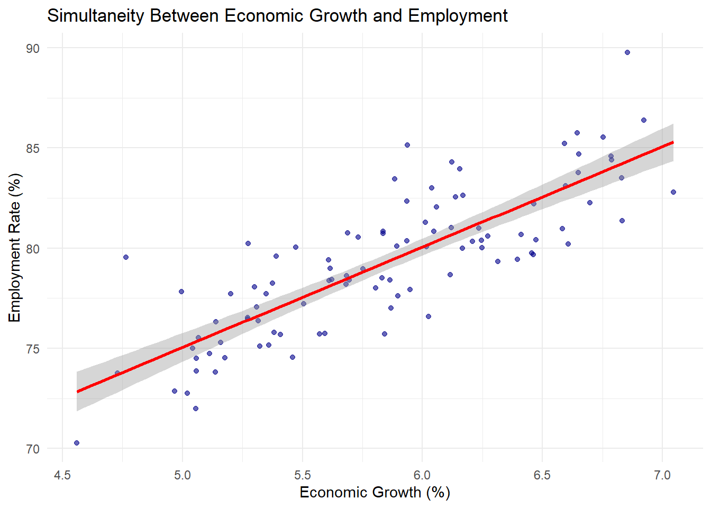
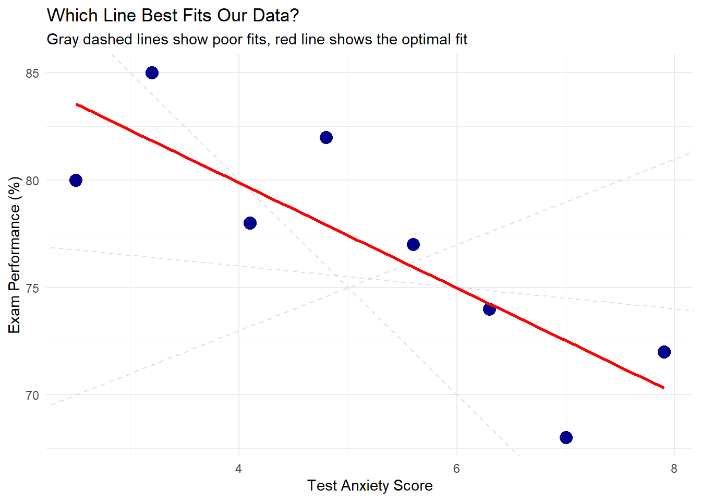

9Introduction to Correlation and Regression Analysis
9.1 Introduction
The distinction between correlation and causation represents a fundamental challenge in statistical analysis. While correlation measures the statistical association between variables, causation implies a direct influence of one variable on another.
Statistical relationships form the backbone of data-driven decision making across disciplines—from economics and public health to psychology and environmental science. Understanding when a relationship indicates mere association versus genuine causality is crucial for valid inference and effective policy recommendations.
9.2 Theoretical Foundations
Covariance
Covariance measures how two variables vary together, indicating both the direction and magnitude of their linear relationship. It provides the foundation for understanding correlation but has a critical limitation: its value depends on the units of measurement, making comparisons across different datasets difficult.
\bar{x} and \bar{y} are the means of variables X and Y
n is the number of observations
We divide by (n-1) for sample covariance (Bessel’s correction)
Interpretation:
Positive covariance: Variables tend to increase together
Negative covariance: When one variable increases, the other tends to decrease
Zero covariance: No linear relationship (variables vary independently)
Magnitude problem: A covariance of 37.5 vs. 7245 cannot be directly compared—the scale depends on the units of X and Y
Correlation Coefficient
The correlation coefficient standardizes covariance to eliminate scale dependency, producing values between -1 and +1. This standardization makes correlation coefficients comparable across different datasets and units of measurement.
Interpretation Guidelines:
Correlation Value
Strength
Interpretation
Example
±0.90 to ±1.00
Very Strong
Almost perfect relationship
Height of parents and children
±0.70 to ±0.89
Strong
Highly related variables
Study time and grades
±0.50 to ±0.69
Moderate
Moderately related
Exercise and weight loss
±0.30 to ±0.49
Weak
Weakly related
Shoe size and reading ability
±0.00 to ±0.29
Very Weak/None
Little to no relationship
Birth month and intelligence
Pearson Correlation Coefficient
Pearson’s r measures the linear relationship between two continuous variables. It assumes that the relationship can be adequately described by a straight line.
Where s_X and s_Y are the sample standard deviations of X and Y.
Properties:
Range: -1 \leq r \leq 1
r = 1: Perfect positive linear relationship
r = -1: Perfect negative linear relationship
r = 0: No linear relationship (but non-linear relationships may still exist)
Sensitive to outliers and non-linear patterns
Spearman Rank Correlation Coefficient
Spearman’s \rho (rho) measures monotonic relationships using ranks instead of raw values. A monotonic relationship means that as one variable increases, the other either consistently increases or consistently decreases, but not necessarily at a constant rate.
Where d_i is the difference between the ranks of corresponding observations.
When to use Spearman vs. Pearson:
Use Pearson when:
Both variables are continuous
The relationship is linear
Data are approximately normally distributed
No significant outliers
Use Spearman when:
Variables are ordinal (ranked data)
The relationship is monotonic but not linear
Data contain outliers
Distributions are skewed
Visualizing Correlation Patterns
# Generate sample data with different correlation patternsn <-100# Positive linear correlationset.seed(123)years_education <-rnorm(n, 14, 3)annual_income <-15000+3500* years_education +rnorm(n, 0, 10000)pos_cor <-round(cor(years_education, annual_income), 3)# Negative linear correlationscreen_time <-runif(n, 1, 8)sleep_hours <-9-0.5* screen_time +rnorm(n, 0, 0.5)neg_cor <-round(cor(screen_time, sleep_hours), 3)# No correlationx_random <-rnorm(n, 50, 10)y_random <-rnorm(n, 50, 10)no_cor <-round(cor(x_random, y_random), 3)# Non-linear correlation (quadratic)hours_studied <-runif(n, 0, 12)test_score <--2* (hours_studied -6)^2+90+rnorm(n, 0, 5)nonlin_cor <-round(cor(hours_studied, test_score), 3)# Create data frames with correlation valuespositive_data <-data.frame(x = years_education, y = annual_income,label =paste0("Positive Linear (r = ", pos_cor, ")"))negative_data <-data.frame(x = screen_time, y = sleep_hours,label =paste0("Negative Linear (r = ", neg_cor, ")"))no_corr_data <-data.frame(x = x_random, y = y_random,label =paste0("No Correlation (r = ", no_cor, ")"))nonlinear_data <-data.frame(x = hours_studied, y = test_score,label =paste0("Non-linear (Pearson r = ", nonlin_cor, ")"))# Combine dataall_data <-rbind(positive_data, negative_data, no_corr_data, nonlinear_data)# Create faceted plotggplot(all_data, aes(x = x, y = y)) +geom_point(alpha =0.6, color ="darkblue", size =2) +geom_smooth(method ="lm", color ="red", se =TRUE, alpha =0.3) +facet_wrap(~ label, scales ="free", ncol =2) +labs(title ="Different Types of Correlations",subtitle ="Linear regression line shown in red with confidence band",x ="", y ="" ) +theme_minimal() +theme(strip.text =element_text(size =10, face ="bold"),plot.title =element_text(size =14, face ="bold"),plot.subtitle =element_text(size =10, color ="gray50") )
`geom_smooth()` using formula = 'y ~ x'
Important Note: The bottom-right panel demonstrates why Pearson correlation can be misleading for non-linear relationships. Despite a clear pattern, the Pearson r value is near zero because the relationship is not linear. In such cases, Spearman correlation or non-linear modeling would be more appropriate.
9.3 Manual Calculation Methods
This section provides step-by-step pen-and-paper calculation procedures for computing covariance and correlation coefficients. These manual calculations are essential for understanding the conceptual foundation of these measures.
r = \frac{7245}{25.77 \times 286.36} = \frac{7245}{7380.14} = 0.982
Interpretation: The very strong positive correlation (r = 0.982) indicates that as temperature increases, ice cream sales increase proportionally. The covariance of 7245 confirms this positive relationship, though its magnitude is difficult to interpret without standardization.
Interpretation: The Spearman correlation of \rho = 0.8 indicates a strong positive monotonic relationship between math and science rankings. Students who rank higher in math tend to rank higher in science.
r = \frac{190/(4)}{7.46 \times 7.91} = \frac{47.5}{59.01} = 0.805
Part 2: Spearman Correlation
Ranks:
X
Rank(X)
Y
Rank(Y)
d
d^2
2
1
60
1
0
0
3
2
65
2
0
0
4
3
70
3
0
0
5
4
75
4
0
0
20
5
80
5
0
0
\rho = 1 - \frac{6 \times 0}{5(24)} = 1 - 0 = 1.0
Explanation: Pearson correlation (r = 0.805) is affected by the outlier (20 hours), reducing the correlation strength. Spearman correlation (\rho = 1.0) is perfect because the rank order is identical despite the extreme value. The ranking approach is robust to outliers.
Which is more appropriate? Spearman is more appropriate here because:
The relationship is monotonic but potentially non-linear
The outlier (20 hours) distorts the Pearson correlation
We care about the ordering relationship more than the exact linear fit
R Verification:
# Data with outlierhours <-c(2, 3, 4, 5, 20)scores <-c(60, 65, 70, 75, 80)# Both correlationspearson_r <-cor(hours, scores, method ="pearson")spearman_rho <-cor(hours, scores, method ="spearman")cat("Pearson correlation:", round(pearson_r, 3))
# Visualizationpar(mfrow =c(1, 2))plot(hours, scores, main ="Raw Data", xlab ="Hours Studied", ylab ="Exam Score",pch =19, col ="darkblue")abline(lm(scores ~ hours), col ="red")text(15, 65, paste("Pearson r =", round(pearson_r, 3)), col ="red")plot(rank(hours), rank(scores), main ="Ranked Data",xlab ="Rank (Hours)", ylab ="Rank (Scores)",pch =19, col ="darkgreen")abline(lm(rank(scores) ~rank(hours)), col ="red")text(4, 2, paste("Spearman ρ =", round(spearman_rho, 3)), col ="red")
Key Takeaways:
Covariance measures the direction and strength of the relationship, but its value depends on the units of measurement of both variables—covariances cannot be compared across different pairs of variables
Pearson correlation standardizes covariance to the range [-1, 1], measuring the strength of a linear relationship. It is sensitive to outliers and can be misleading for non-linear relationships
Spearman correlation is based on ranks, measuring monotonic relationships (not necessarily linear). It is robust to outliers and appropriate for ordinal data
Manual calculations are crucial for understanding how these measures are constructed—they show that correlation is essentially a standardized average of products of deviations
Visualization is essential—a scatter plot can reveal non-linearity, outliers, or lack of relationship that numbers alone will not show
Choosing a measure: Use Pearson for linear relationships between continuous variables without outliers; use Spearman for ranked data, non-linear relationships, or in the presence of outliers
9.6 Important Points to Remember
Correlation measures relationship strength: Values range from -1 to +1
Correlation ≠ Causation: High correlation doesn’t prove one variable causes another
Choose the right method:
Pearson: For linear relationships in continuous data
Spearman: For monotonic relationships or ranked data
Check assumptions:
Pearson assumes linear relationship and normal distribution
Spearman only assumes monotonic relationship
Watch for outliers: Extreme values can greatly affect Pearson correlation
Visualize your data: Always plot before calculating correlation
9.7 Summary: Decision Tree for Correlation Analysis
CHOOSING THE RIGHT CORRELATION METHOD:
Is your data numerical?
├─ YES → Is the relationship linear?
│ ├─ YES → Use PEARSON correlation
│ └─ NO → Is it monotonic?
│ ├─ YES → Use SPEARMAN correlation
│ └─ NO → Consider non-linear methods
└─ NO → Is it ordinal (ranked)?
├─ YES → Use SPEARMAN correlation
└─ NO → Use CROSS-TABULATION for categorical data (beyond the scope of this course)
Quick Reference Card
Measure
Use When
Formula
Range
Covariance
Initial exploration of relationship
\frac{\sum(x_i-\bar{x})(y_i-\bar{y})}{n-1}
-∞ to +∞
Pearson r
Linear relationships, continuous data
\frac{\text{cov}(X,Y)}{s_X s_Y}
-1 to +1
Spearman ρ
Monotonic relationships, ranked data
1 - \frac{6\sum d_i^2}{n(n^2-1)}
-1 to +1
Cross-tabs
Categorical variables
Frequency counts
N/A
9.8 Introduction to Statistical Modeling, Regression Analysis, and OLS Method
What Is a Model and Why Do We Need Models?
A model is a simplified representation of reality. It’s not meant to capture every detail of the world – that would be impossible and useless.
Instead, a model deliberately ignores most complexity to focus on the essential relationships we care about.
Think about a subway map. It doesn’t show real distances, street layouts, or building locations. It’s “wrong” in most details – but it’s incredibly useful because it shows what matters: which stations connect and in what order. This is what all good models do: they sacrifice completeness for clarity and usefulness.
In social sciences, we build models to:
Understand relationships: Does education affect income? Does campaign spending influence election outcomes? Models help us isolate specific relationships from the noise of reality.
Make predictions: What voter turnout can we expect given current economic conditions? Models let us make educated guesses about unknown or future values.
Test theories: Is there evidence that proportional representation systems increase voter participation? Models provide a framework for rigorous hypothesis testing.
Simplify complexity: Real social phenomena involve thousands of factors. Models help us focus on what matters most.
The famous statistician George Box wrote: “All models are wrong, but some are useful.” This isn’t pessimism – it’s realism. We know our models don’t capture every detail of reality. The question is whether they’re useful enough for our purposes.
Why Regression Analysis?
Regression analysis is one of the most fundamental tools in quantitative social science. At its core, regression answers a simple question: How does Y change when X changes?
For example:
How does GDP growth (Y) relate to government debt (X)?
How does voter turnout (Y) change with education levels (X)?
How does policy support (Y) respond to media coverage (X)?
But regression does more than just describe relationships. It allows us to:
Quantify relationships: Not just “education affects income” but “each additional year of education is associated with approximately X% higher income, on average.”
Control for confounding factors: We can examine the effect of X on Y while holding other variables constant – crucial when we can’t run controlled experiments.
Make conditional predictions: Given specific values of our predictor variables, what outcome would we expect?
Test competing explanations: Do economic factors or cultural factors better explain voting behavior? Regression lets us compare.
Deterministic vs. Stochastic Models
In science and social sciences, we work with two fundamentally different types of models:
Deterministic models assume perfect, exact relationships with no randomness. For example, in physics:
d = v \cdot t
If velocity (v) is 50 km/h and time (t) is 2 hours, then distance (d) is exactly 100 km. No variation, no uncertainty.
Stochastic models acknowledge that relationships are not perfect – they include randomness and uncertainty. In social sciences, we almost always work with stochastic models because:
Human behavior is complex and influenced by many factors
We can’t measure everything that matters
There’s genuine randomness in social processes
Measurement itself contains errors
A stochastic model captures this by writing:
Y_i = f(X_i) + \varepsilon_i
where:
Y_i is the outcome we want to predict (e.g., voter turnout)
X_i is our predictor variable (e.g., GDP per capita)
f(X_i) is the systematic part – the pattern we can explain
\varepsilon_i is the stochastic part – the random error or unexplained variation
Example: Predicting exam scores from study hours. Even if we know someone studied 5 hours, we can’t predict their exact score – maybe they had a bad day, maybe the material was particularly hard for them, maybe they’re naturally talented. The best we can do is predict the average score for people who studied 5 hours, acknowledging there will be variation around this average.
The key insight: we’re trying to model the systematic relationship while acknowledging that perfect prediction is impossible.
Visualizing Relationships: Scatterplots and Types of Patterns
Before fitting any model, we should always visualize our data. A scatterplot displays the relationship between two variables. Different datasets can show very different patterns:
Figure 9.1: Different types of relationships between variables
Why focus on linear relationships?
Linear relationships are our starting point for several reasons:
Many real-world relationships are approximately linear (at least within a limited range)
Linear models are simple, interpretable, and mathematically tractable
They serve as a baseline – if a linear model doesn’t fit well, we know we need something more complex
Many non-linear relationships can be transformed to linear ones (e.g., logarithmic transformations)
Important: If your scatterplot shows a clear curvilinear or non-linear pattern, a straight line will be a poor fit. Always check your data first!
A Simple Example: Study Hours and Exam Scores
For the rest of this section, we’ll work with a dataset that shows an approximately linear relationship:
# Generate example dataset.seed(123)n <-50study_hours <-runif(n, 0, 10)exam_scores <-50+4* study_hours +rnorm(n, 0, 8)# Create scatterplotplot(study_hours, exam_scores,xlab ="Study Hours",ylab ="Exam Score",main ="Scatterplot: Study Hours vs. Exam Scores",pch =19, col ="steelblue")
Figure 9.2: Relationship between study hours and exam scores
In this scatterplot, we can see a general positive linear relationship: students who study more tend to score higher. But the relationship isn’t perfect – there’s scatter around any imaginary line we might draw through the points.
The Idea of a “Best Fit” Line
Looking at the scatterplot, we might want to summarize the relationship with a straight line. But which line? There are infinitely many lines we could draw. We need a criterion for what makes a line “best.”
The regression line (or “best fit line”) is the line that minimizes the sum of squared errors (SSE). Let’s understand this step by step.
If we propose a line with equation \hat{Y}_i = \hat{\beta}_0 + \hat{\beta}_1 X_i, then for each observation i, we can calculate:
The predicted value: \hat{Y}_i = \hat{\beta}_0 + \hat{\beta}_1 X_i
The residual (or error): e_i = Y_i - \hat{Y}_i
The residual is the vertical distance between the actual point and our line. The Sum of Squared Errors is:
We already showed this calculation in the previous section. The key insight is that:
\hat{\beta}_1 measures the average change in Y per unit change in X
\hat{\beta}_0 is the predicted value of Y when X = 0
Interpretation of our example:\hat{Y}_i = 54.1 + 3.65X_i
Each additional hour of study is associated with a 3.65-point increase in exam score. A student who doesn’t study at all (X = 0) would be predicted to score 54.1 points (though this extrapolation may not be meaningful).
Evaluating Model Quality: R-squared
The R-squared (R^2) tells us what proportion of variance in Y is explained by our model:
R^2 = \frac{SSR}{SST} = 1 - \frac{SSE}{SST}
From our example: R^2 = \frac{532.9}{586} = 0.909 or 1 - \frac{53.1}{586} = 0.909
Interpretation: 90.9% of the variance in exam scores is explained by study hours. Our model does a good job, though there’s still about 9% of variance that remains unexplained – likely due to other factors like natural ability, test anxiety, quality of study, or prior knowledge.
Properties of R^2:
Ranges from 0 to 1
R^2 = 0: model no better than predicting the mean
R^2 = 1: perfect predictions (all points on the line)
Higher R^2 means better fit, but doesn’t guarantee causality or good predictions out of sample
par(mfrow =c(1, 3))# High R-squaredset.seed(1)x1 <-1:30y1 <-2+3*x1 +rnorm(30, 0, 3)plot(x1, y1, pch =19, col ="steelblue", main =paste("High R² =", round(summary(lm(y1 ~ x1))$r.squared, 2)))abline(lm(y1 ~ x1), col ="red", lwd =2)# Medium R-squaredy2 <-2+3*x1 +rnorm(30, 0, 15)plot(x1, y2, pch =19, col ="steelblue", main =paste("Medium R² =", round(summary(lm(y2 ~ x1))$r.squared, 2)))abline(lm(y2 ~ x1), col ="red", lwd =2)# Low R-squaredy3 <-2+3*x1 +rnorm(30, 0, 30)plot(x1, y3, pch =19, col ="steelblue", main =paste("Low R² =", round(summary(lm(y3 ~ x1))$r.squared, 2)))abline(lm(y3 ~ x1), col ="red", lwd =2)
Figure 9.5: Different R-squared values
Evaluating Model Quality: RMSE
While R^2 is scale-free, Root Mean Squared Error (RMSE) gives us the average prediction error in the original units:
Model Interpretation, Effect Size, and Diagnostics
Once we’ve fit a regression model, we need to go beyond R^2 and RMSE to understand what our model tells us. This involves three key tasks: interpreting coefficients substantively, assessing effect sizes, and checking for potential problems through diagnostics.
Interpreting Regression Coefficients
The slope coefficient \hat{\beta}_1 has a specific interpretation:
A one-unit increase in X is associated with a \hat{\beta}_1-unit change in Y, on average.
For our example (\hat{Y}_i = 54.1 + 3.65X_i):
Slope interpretation: Each additional hour of study is associated with a 3.65-point increase in exam score, on average.
Intercept interpretation: A student with zero study hours would be predicted to score 54.1 points (though this may involve extrapolation beyond the data range).
Important considerations:
The coefficient describes association, not necessarily causation
The relationship is linear – we assume the effect is constant across the range of X
The effect is an average – individual students may vary
Practical interpretation example:
If you study 3 hours vs. 6 hours (a 3-hour difference), the predicted score difference is:
3 \times 3.65 = 10.95 \text{ points}
This gives us a practical sense of the relationship’s magnitude.
Effect Size: Standardized Coefficients
When comparing effects across different variables or studies, raw coefficients can be misleading because they depend on the units of measurement. Is a 3.65-point increase per hour “large” or “small”?
Standardized coefficients (beta coefficients) express the effect in standard deviation units:
Interpretation: A one-standard-deviation increase in study hours (about 3.2 hours) is associated with a 0.953-standard-deviation increase in exam scores (about 11.5 points).
Rule of thumb for effect sizes:
Small effect: |\hat{\beta}_1^{*}| \approx 0.1
Medium effect: |\hat{\beta}_1^{*}| \approx 0.3
Large effect: |\hat{\beta}_1^{*}| \approx 0.5 or higher
Our effect (0.953) is very large, suggesting study hours have a substantial relationship with exam scores.
After fitting a model, we should check whether our assumptions hold. The most useful diagnostic tool is the residual plot: plotting residuals (e_i = Y_i - \hat{Y}_i) against predicted values (\hat{Y}_i).
What to look for:
Random scatter: Residuals should be randomly scattered around zero
Constant spread: The vertical spread should be roughly constant (homoscedasticity)
No patterns: Curved patterns suggest non-linearity
No outliers: Extremely large residuals may indicate problems
par(mfrow =c(2, 2))# 1. Residuals vs. Fittedmodel <-lm(exam_scores ~ study_hours)plot(fitted(model), residuals(model),xlab ="Fitted Values",ylab ="Residuals",main ="Residuals vs. Fitted",pch =19, col ="steelblue")abline(h =0, col ="red", lty =2, lwd =2)# 2. Histogram of residualshist(residuals(model), main ="Histogram of Residuals",xlab ="Residuals",col ="lightblue",breaks =10)# 3. Q-Q plot (checking normality)qqnorm(residuals(model), pch =19, col ="steelblue")qqline(residuals(model), col ="red", lwd =2)# 4. Residuals vs. Predictorplot(study_hours, residuals(model),xlab ="Study Hours",ylab ="Residuals",main ="Residuals vs. Study Hours",pch =19, col ="steelblue")abline(h =0, col ="red", lty =2, lwd =2)
Figure 9.6: Residual diagnostic plots
Interpreting the residual plot:
Good: Points scattered randomly around zero with no pattern
Bad - Funnel shape: Variance increases with fitted values (heteroscedasticity)
Bad - Curved pattern: Non-linear relationship not captured by the model
Bad - Clustering: Possible subgroups or missing variables
Identifying Outliers and Influential Points
Not all data points are equally important. Some observations can have a disproportionate influence on the regression line.
Types of unusual observations:
Outliers: Observations with large residuals (far from the regression line)
High leverage points: Observations with extreme X values
Influential points: Observations that, if removed, would substantially change the regression line
Detecting outliers manually:
For our five-student example, let’s examine the residuals:
Student
X_i
Y_i
\hat{Y}_i
e_i
|e_i|
1
2
60
61.4
-1.4
1.4
2
4
73
68.7
4.3
4.3
3
6
71
76.0
-5.0
5.0
4
8
86
83.3
2.7
2.7
5
10
90
90.6
-0.6
0.6
Student 3 has the largest residual (5.0 points below predicted). Is this an outlier?
Rule of thumb: A residual is concerning if |e_i| > 2 \times RMSE
In our case: 2 \times 3.26 = 6.52 points. Student 3’s residual (5.0) is below this threshold, so it’s not a severe outlier.
Visualizing potential outliers:
par(mfrow =c(1, 2))# Plot 1: Highlight potential outliersmodel <-lm(exam_scores ~ study_hours)plot(study_hours, exam_scores,xlab ="Study Hours",ylab ="Exam Score",main ="Identifying Outliers",pch =19, col ="steelblue")abline(model, col ="red", lwd =2)# Identify points with large residualslarge_resid <-abs(residuals(model)) >2*sd(residuals(model))if(any(large_resid)) {points(study_hours[large_resid], exam_scores[large_resid],col ="orange", pch =19, cex =2)text(study_hours[large_resid], exam_scores[large_resid],labels =which(large_resid), pos =3, col ="orange")}# Plot 2: Leverage plotplot(hatvalues(model),xlab ="Observation Number",ylab ="Leverage",main ="Leverage of Each Point",pch =19, col ="steelblue")abline(h =2*length(coef(model)) /length(exam_scores), col ="red", lty =2)
Figure 9.7: Identifying outliers and influential points
What to do about outliers:
Investigate: Check if it’s a data entry error
Understand: What makes this observation unusual?
Report: Note the outlier and consider analyzing with and without it
Don’t automatically delete: Outliers may contain important information
For example, Student 3 might have test anxiety despite adequate preparation, or might learn differently. This is substantively meaningful information, not just “noise.”
Always remember: statistical diagnostics should be combined with substantive knowledge about your research question. A statistically “good” model that doesn’t make theoretical sense is still problematic.
Correlation vs. Causation and Spurious Relationships
One of the most important lessons in statistics is that correlation does not imply causation. Just because two variables are related does not mean one causes the other. This section explores why this distinction matters and how spurious correlations can mislead us.
The Fundamental Problem
When we find that X and Y are correlated (they move together), there are several possible explanations:
X causes Y: Changes in X directly produce changes in Y
Y causes X: The causal arrow goes the other direction
Confounding: A third variable Z causes both X and Y
Coincidence: The relationship is spurious – just random chance
Regression analysis can tell us that X and Y are associated, but it cannot tell us why they’re associated. To claim causation, we need additional evidence beyond correlation.
Classic Examples of Correlation Without Causation
Example 1: Ice cream sales and drowning deaths
Observation: Countries with higher ice cream sales also have more drowning deaths. Should we ban ice cream to prevent drownings?
No! The confounding variable is temperature. Hot weather causes both:
More ice cream sales (people cool off with ice cream)
More drowning deaths (people swim more often)
set.seed(42)n <-30temperature <-rnorm(n, 25, 5)ice_cream <-50+3* temperature +rnorm(n, 0, 10)drownings <-10+0.8* temperature +rnorm(n, 0, 3)par(mfrow =c(1, 2))# Plot 1: Ice cream vs. drownings (spurious correlation)plot(ice_cream, drownings,xlab ="Ice Cream Sales",ylab ="Drowning Deaths",main ="Spurious Correlation",pch =19, col ="steelblue")abline(lm(drownings ~ ice_cream), col ="red", lwd =2)text(60, 35, paste("R² =", round(summary(lm(drownings ~ ice_cream))$r.squared, 2)),col ="red")# Plot 2: Both related to temperature (confounding)plot(temperature, ice_cream,xlab ="Temperature (°C)",ylab ="Ice Cream Sales / Drownings",main ="Both Related to Temperature",pch =19, col ="steelblue",ylim =c(0, 150))points(temperature, drownings *3, pch =17, col ="darkgreen")abline(lm(ice_cream ~ temperature), col ="steelblue", lwd =2)abline(lm(I(drownings *3) ~ temperature), col ="darkgreen", lwd =2)legend("topleft", legend =c("Ice Cream", "Drownings (scaled)"),col =c("steelblue", "darkgreen"), pch =c(19, 17))
Figure 9.8: Example of spurious correlation through confounding
Example 2: Shoe size and reading ability in children
Observation: Children with larger shoe sizes read better. Does foot size enhance cognition?
No! The confounding variable is age. Older children have both:
Larger shoe sizes (they’ve grown)
Better reading skills (they’ve had more education)
Example 3: Number of firefighters and fire damage
Observation: Fires with more firefighters present tend to have more property damage. Should we send fewer firefighters to reduce damage?
Absolutely not! This is reverse causation combined with confounding:
Bigger fires cause more damage (directly)
Bigger fires also require more firefighters (response to severity)
The number of firefighters doesn’t cause damage; fire severity causes both.
What Makes a Relationship Causal?
To establish causation, we typically need:
Temporal precedence: The cause must precede the effect
Association: The variables must be correlated
No plausible confounders: We’ve ruled out alternative explanations
Mechanism: We understand howX affects Y
Dose-response: Larger values of X produce larger effects on Y
The gold standard for establishing causation is a randomized controlled experiment, where we randomly assign people to receive different values of X. This breaks the relationship between X and potential confounders.
However, in social science, we often can’t run experiments (it would be unethical or impractical). Instead, we use:
Longitudinal designs (measuring variables over time)
Natural experiments (finding naturally occurring random variation)
Careful control for confounders (including them in multiple regression)
Theoretical reasoning and prior evidence
Spurious Correlations
A spurious correlation is a statistical relationship between two variables that is not due to any causal connection between them. These often arise from:
Common cause (confounding): Z causes both X and Y
Coincidence: Random chance produces apparent patterns
Selection bias: The way we sample creates artificial relationships
Famous spurious correlations:
Per capita cheese consumption correlates with deaths by bedsheet tangling (r = 0.95)
Number of Nicolas Cage movies correlates with swimming pool drownings (r = 0.67)
Per capita margarine consumption correlates with divorce rate in Maine (r = 0.99)
These are clearly not causal – they’re coincidences in time-series data. The lesson: high correlation, even very high, does not prove causation.
Implications for Regression Analysis
When we interpret our regression results, we must be cautious:
What regression tells us:
X and Y are associated
The strength of the association (\hat{\beta}_1)
How much variance is explained (R^2)
Whether the relationship is linear
What regression does NOT tell us:
Whether X causes Y
Whether we’ve omitted important confounders
The direction of causation
Whether the relationship is spurious
Our study hours example:
We found that study hours strongly predict exam scores (R^2 = 0.909). Does studying cause higher scores?
Probably yes, but we should consider alternative explanations:
Reverse causation: Maybe students who are naturally good at the subject (high ability) enjoy studying more, so they study longer. Here, ability causes both study hours and exam scores.
Confounding: Maybe students with supportive parents both study more and perform better (parents help with homework and create good study environments).
Selection: Maybe only motivated students were in our sample, and motivation causes both studying and performance.
To strengthen a causal claim, we could:
Control for prior ability (include previous exam scores)
Control for parental involvement
Use an experimental design (randomly assign study hours)
Check if the relationship holds across different contexts
Practical Advice
When reporting regression results:
Use careful language: “associated with” rather than “causes” or “leads to”
Acknowledge potential confounders
Discuss alternative explanations
Be explicit about the study design’s limitations
If claiming causation, provide theoretical reasoning and additional evidence
Remember: correlation is a necessary but not sufficient condition for causation. Finding an association is just the first step in understanding whether one variable influences another.
Key Assumptions of OLS
For OLS to provide meaningful estimates, we need several assumptions:
Linearity: The relationship between X and Y is linear: Y_i = \beta_0 + \beta_1 X_i + \varepsilon_i
Strict Exogeneity: The error term has zero expected value conditional on X: E[\varepsilon_i | X_i] = 0
This means X is uncorrelated with the error – there are no omitted variables that affect both X and Y.
Homoscedasticity (not strict, but desirable): The variance of errors is constant: Var(\varepsilon_i | X_i) = \sigma^2
No perfect collinearity (important for multiple regression): Predictor variables are not perfectly correlated.
Important note: We are not making probabilistic assumptions about the sampling distribution here. We’re simply describing the relationship in our data. For inference (hypothesis tests, confidence intervals), we would need additional assumptions, but that’s beyond our scope for now.
For What Data Can We Apply OLS Regression?
OLS regression has specific requirements regarding variable types:
Dependent variable (outcome, Y):
Must be continuous or quasi-continuous (e.g., discrete with many values)
Level of measurement (Stevens’ typology):
Interval: differences between values are meaningful, but no natural zero (e.g., temperature in °C, IQ test scores)
Ratio: like interval, but with a natural zero (e.g., income, age, hours)
Not suitable: Nominal variables – categories without order (e.g., eye color, gender) or ordinal variables with few categories (e.g., Likert scale 1-5)
Statistical models include both systematic patterns and random variation
Different relationships exist in data – linear models work best for linear relationships
The OLS method finds the line that minimizes the sum of squared errors
We can decompose variance: SST = SSR + SSE
R^2 = SSR/SST measures the proportion of variance explained (0 to 1)
RMSE measures average prediction error in original units
Coefficients should be interpreted substantively, considering effect sizes
Standardized coefficients allow comparison across different scales
Residual plots and outlier detection help diagnose model problems
Correlation does not imply causation – confounding and spurious relationships are common
To establish causation, we need temporal precedence, no confounders, and theoretical mechanisms
OLS requires assumptions like linearity and strict exogeneity
Multiple regression extends this framework to many predictors
In practice, always visualize your data first, check whether a linear model is appropriate, examine residual plots for problems, think carefully about causal interpretation, and remember that association is not causation – even a high R^2 doesn’t prove that X causes Y.
9.9 Complete Manual OLS Calculation: A Step-by-Step Example
A professor wants to understand the relationship between hours spent studying and exam scores. She collects data from 6 students:
Student
Study Hours (X)
Exam Score (Y)
A
1
65
B
2
70
C
3
75
D
4
85
E
5
88
F
6
95
Our goal: Find the best-fitting line \hat{Y} = \hat{\beta}_0 + \hat{\beta}_1X using OLS.
9.10 Step 1: Calculate the Means
First, we need the mean of X and Y.
For X (study hours):\bar{X} = \frac{1 + 2 + 3 + 4 + 5 + 6}{6} = \frac{21}{6} = 3.5
For Y (exam scores):\bar{Y} = \frac{65 + 70 + 75 + 85 + 88 + 95}{6} = \frac{478}{6} = 79.67
9.11 Step 2: Calculate Deviations from Means
For each observation, calculate (X_i - \bar{X}) and (Y_i - \bar{Y}):
Student
X_i
Y_i
X_i - \bar{X}
Y_i - \bar{Y}
A
1
65
1 - 3.5 = -2.5
65 - 79.67 = -14.67
B
2
70
2 - 3.5 = -1.5
70 - 79.67 = -9.67
C
3
75
3 - 3.5 = -0.5
75 - 79.67 = -4.67
D
4
85
4 - 3.5 = 0.5
85 - 79.67 = 5.33
E
5
88
5 - 3.5 = 1.5
88 - 79.67 = 8.33
F
6
95
6 - 3.5 = 2.5
95 - 79.67 = 15.33
9.12 Step 3: Calculate Products and Squares
Now calculate (X_i - \bar{X})(Y_i - \bar{Y}) and (X_i - \bar{X})^2:
Student
(X_i - \bar{X})(Y_i - \bar{Y})
(X_i - \bar{X})^2
A
(-2.5)(-14.67) = 36.68
(-2.5)² = 6.25
B
(-1.5)(-9.67) = 14.51
(-1.5)² = 2.25
C
(-0.5)(-4.67) = 2.34
(-0.5)² = 0.25
D
(0.5)(5.33) = 2.67
(0.5)² = 0.25
E
(1.5)(8.33) = 12.50
(1.5)² = 2.25
F
(2.5)(15.33) = 38.33
(2.5)² = 6.25
Sum
107.03
17.50
9.13 Step 4: Calculate the Slope (\hat{\beta}_1)
Using the OLS formula: \hat{\beta}_1 = \frac{\sum(X_i - \bar{X})(Y_i - \bar{Y})}{\sum(X_i - \bar{X})^2} = \frac{107.03}{17.50} = 6.12
Interpretation: Each additional hour of study is associated with a 6.12-point increase in exam score.
9.14 Step 5: Calculate the Intercept (\hat{\beta}_0)
# Step 11: Calculate Effect Sizes# Raw effect size (just the slope)cat("\n--- Effect Size Calculations ---\n")
--- Effect Size Calculations ---
cat("Raw effect size (slope):", round(beta_1_manual, 2), "points per hour\n")
Raw effect size (slope): 6.11 points per hour
# Standard deviations for standardized effectsd_x <-sd(data$X) # Standard deviation of Xsd_y <-sd(data$Y) # Standard deviation of Ycat("\nStandard deviations:\n")
A plot showing the data points, regression line, and residuals
This verification confirms that our pen-and-paper calculations were correct! :::
9.24 Model Interpretation: A Beginner’s Guide
Let’s create a simple dataset to understand regression output better. Imagine we’re studying how years of education affect annual income:
# Create a simple dataset - this is our Data Generating Process (DGP)set.seed(123) # For reproducibilityeducation_years <-10:20# Education from 10 to 20 yearsn <-length(education_years)# True parameters in our model - using more realistic values for Polandtrue_intercept <-3000# Base monthly income with no education (in PLN)true_slope <-250# Each year of education increases monthly income by 250 PLN# Generate monthly incomes with some random noiseincome <- true_intercept + true_slope * education_years +rnorm(n, mean=0, sd=300)# Create our dataseteducation_income <-data.frame(education = education_years,income = income)# Let's visualize our datalibrary(ggplot2)ggplot(education_income, aes(x = education, y = income)) +geom_point(size =3, color ="blue") +geom_smooth(method ="lm", color ="red", se =TRUE) +scale_y_continuous(limits =c(5000, 8500), breaks =seq(5000, 8500, by =500),labels = scales::comma) +scale_x_continuous(breaks =10:20) +labs(title ="Relationship between Education and Income in Poland",x ="Years of Education",y ="Monthly Income (PLN)",subtitle ="Red line shows the estimated linear relationship" ) +theme_minimal(base_size =12) +theme(panel.grid.minor =element_blank(),plot.title =element_text(face ="bold"),axis.title =element_text(face ="bold") ) +annotate("text", x =11, y =8000, label ="Each point represents\none person's data", hjust =0, size =4)
`geom_smooth()` using formula = 'y ~ x'
Fitting the Model
Now let’s fit a linear regression model to this data:
# Fit a simple regression modeledu_income_model <-lm(income ~ education, data = education_income)# Display the resultsmodel_summary <-summary(edu_income_model)model_summary
Call:
lm(formula = income ~ education, data = education_income)
Residuals:
Min 1Q Median 3Q Max
-427.72 -206.04 -38.12 207.32 460.78
Coefficients:
Estimate Std. Error t value Pr(>|t|)
(Intercept) 3095.3 447.6 6.915 0.0000695 ***
education 247.2 29.2 8.467 0.0000140 ***
---
Signif. codes: 0 '***' 0.001 '**' 0.01 '*' 0.05 '.' 0.1 ' ' 1
Residual standard error: 306.3 on 9 degrees of freedom
Multiple R-squared: 0.8885, Adjusted R-squared: 0.8761
F-statistic: 71.69 on 1 and 9 DF, p-value: 0.00001403
Understanding the Regression Output Step by Step
Let’s break down what each part of this output means in simple terms:
1. The Formula
At the top, you see income ~ education, which means we’re predicting income based on education.
2. Residuals
These show how far our predictions are from the actual values. Ideally, they should be centered around zero.
3. Coefficients Table
Coefficient Estimates
Estimate
Std. Error
t value
Pr(>|t|)
(Intercept)
3095.27
447.63
6.91
0
education
247.23
29.20
8.47
0
Intercept (\beta_0):
Value: Approximately 3095
Interpretation: This is the predicted monthly income for someone with 0 years of education
Note: Sometimes the intercept isn’t meaningful in real-world terms, especially if x=0 is outside your data range
Education (\beta_1):
Value: Approximately 247
Interpretation: For each additional year of education, we expect monthly income to increase by this amount in PLN
This is our main coefficient of interest!
Standard Error:
Measures how precise our estimates are
Smaller standard errors mean more precise estimates
Think of it as “give or take how much” for our coefficients
t value:
This is the coefficient divided by its standard error
It tells us how many standard errors away from zero our coefficient is
Larger absolute t values (above 2) suggest the effect is statistically significant
p-value:
The probability of seeing our result (or something more extreme) if there was actually no relationship
Typically, p < 0.05 is considered statistically significant
For education, p = 0.000014, which is significant!
4. Model Fit Statistics
Model Fit Statistics
Statistic
Value
R-squared
0.888
Adjusted R-squared
0.876
F-statistic
71.686
p-value
0.000
R-squared:
Value: 0.888
Interpretation: 89% of the variation in income is explained by education
Higher is better, but be cautious of very high values (could indicate overfitting)
F-statistic:
Tests whether the model as a whole is statistically significant
A high F-statistic with a low p-value indicates a significant model
Visualizing the Model Results
Let’s visualize what our model actually tells us:
# Predicted valueseducation_income$predicted <-predict(edu_income_model)education_income$residuals <-residuals(edu_income_model)# Create a more informative plotggplot(education_income, aes(x = education, y = income)) +# Actual data pointsgeom_point(size =3, color ="blue") +# Regression linegeom_line(aes(y = predicted), color ="red", size =1.2) +# Residual linesgeom_segment(aes(xend = education, yend = predicted), color ="darkgray", linetype ="dashed") +# Set proper scalesscale_y_continuous(limits =c(5000, 8500), breaks =seq(5000, 8500, by =500),labels = scales::comma) +scale_x_continuous(breaks =10:20) +# Annotationsannotate("text", x =19, y =7850, label =paste("Slope =", round(coef(edu_income_model)[2]), "PLN per year"),color ="red", hjust =1, fontface ="bold") +annotate("text", x =10.5, y =5500, label =paste("Intercept =", round(coef(edu_income_model)[1]), "PLN"),color ="red", hjust =0, fontface ="bold") +annotate("text", x =14, y =8200, label =paste("R² =", round(model_summary$r.squared, 2)),color ="black", fontface ="bold") +# Labelslabs(title ="Interpreting the Education-Income Regression Model",subtitle ="Red line shows predicted income for each education level",x ="Years of Education",y ="Monthly Income (PLN)",caption ="Gray dashed lines represent residuals (prediction errors)" ) +theme_minimal(base_size =12) +theme(panel.grid.minor =element_blank(),plot.title =element_text(face ="bold"),axis.title =element_text(face ="bold") )
Warning: Using `size` aesthetic for lines was deprecated in ggplot2 3.4.0.
ℹ Please use `linewidth` instead.
Real-World Interpretation
A person with 16 years of education (college graduate) would be predicted to earn about: \hat{Y} = 3095 + 247 \times 16 = 7051 \text{ PLN monthly}
The model suggests that each additional year of education is associated with a 247 PLN increase in monthly income.
Our model explains approximately 89% of the variation in income in our sample.
The relationship is statistically significant (p < 0.001), meaning it’s very unlikely to observe this relationship if education truly had no effect on income.
Important Cautions for Beginners
Correlation ≠ Causation: Our model shows association, not necessarily causation
Omitted Variables: Other factors might influence both education and income
Extrapolation: Be careful predicting outside the range of your data
Linear Relationship: We’ve assumed the relationship is linear, which may not always be true
9.25 Derivation of OLS Estimators (*)
For simple linear regression, the OLS estimators are obtained by minimizing the sum of squared residuals:
Taking partial derivatives with respect to \beta_0 and \beta_1 and setting them equal to zero yields the normal equations. Solving this system produces:
The OLS procedure guarantees several important properties:
Zero sum of residuals: \sum_{i=1}^{n} e_i = 0
Orthogonality of residuals and predictors: \sum_{i=1}^{n} X_i e_i = 0
The fitted regression line passes through the point(\bar{X}, \bar{Y})
Zero covariance between fitted values and residuals: \sum_{i=1}^{n} \hat{Y}_i e_i = 0
Classical Linear Model Assumptions
Core Assumptions
For OLS estimators to possess desirable statistical properties, the following assumptions must hold:
Assumption 1: Linearity in Parameters
The relationship between the dependent and independent variables is linear in the parameters: Y_i = \beta_0 + \beta_1 X_{1i} + ... + \beta_k X_{ki} + \varepsilon_i
Assumption 2: Strict Exogeneity
The error term has zero conditional expectation given all values of the independent variables: E[\varepsilon_i | X] = 0
This assumption implies that the independent variables contain no information about the mean of the error term. It is stronger than contemporaneous exogeneity and rules out feedback from past errors to current regressors. This assumption is critical for unbiased estimation and is often violated in time series contexts with lagged dependent variables or in the presence of omitted variables.
This assumption is particularly important for our discussion of spurious correlations. Violations of the exogeneity assumption lead to endogeneity problems, which we will discuss later.
Assumption 3: No Perfect Multicollinearity
In multiple regression, no independent variable can be expressed as a perfect linear combination of other independent variables. The matrix X'X must be invertible.
Assumption 4: Homoscedasticity
The variance of the error term is constant across all observations: Var(\varepsilon_i | X) = \sigma^2
This assumption ensures that the precision of the regression does not vary systematically with the level of the independent variables.
Assumption 5: No Autocorrelation
The error terms are uncorrelated with each other: Cov(\varepsilon_i, \varepsilon_j | X) = 0 \text{ for } i \neq j
Assumption 6: Normality of Errors (for inference)
The error terms follow a normal distribution: \varepsilon_i \sim N(0, \sigma^2)
This assumption is not required for the unbiasedness or consistency of OLS estimators but is necessary for exact finite-sample inference.
Gauss-Markov Theorem
Under Assumptions 1-5, the OLS estimators are BLUE (Best Linear Unbiased Estimators):
Best: Minimum variance among the class of linear unbiased estimators
Linear: The estimators are linear functions of the dependent variable
Unbiased: E[\hat{\beta}] = \beta
Visualization of OLS Methodology
Geometric Interpretation
# Comprehensive visualization of OLS regressionlibrary(ggplot2)# Generate sample dataset.seed(42)n <-50x <-runif(n, 0, 100)epsilon <-rnorm(n, 0, 15)y <-20+0.8*x + epsilon# Create data framedata <-data.frame(x = x, y = y)# Fit regression modelmodel <-lm(y ~ x, data = data)data$fitted <-fitted(model)data$residuals <-residuals(model)# Create comprehensive plotggplot(data, aes(x = x, y = y)) +# Add confidence intervalgeom_smooth(method ="lm", se =TRUE, alpha =0.15, fill ="blue") +# Add regression linegeom_line(aes(y = fitted), color ="blue", linewidth =1.2) +# Add residual segmentsgeom_segment(aes(xend = x, yend = fitted), color ="red", alpha =0.5, linewidth =0.7) +# Add observed pointsgeom_point(size =2.5, alpha =0.8) +# Add fitted valuesgeom_point(aes(y = fitted), color ="blue", size =1.5, alpha =0.6) +# Annotationstheme_bw() +theme(panel.grid.minor =element_blank(),axis.title =element_text(size =11),plot.title =element_text(size =12, face ="bold") ) +labs(title ="Ordinary Least Squares Regression",subtitle =sprintf("Estimated equation: Y = %.2f + %.3f X (R² = %.3f, RSE = %.2f)",coef(model)[1], coef(model)[2], summary(model)$r.squared, summary(model)$sigma),x ="Independent Variable (X)",y ="Dependent Variable (Y)" ) +annotate("text", x =min(x) +5, y =max(y) -5,label =sprintf("SSE = %.1f", sum(residuals(model)^2)),hjust =0, size =3.5)
Assessment of model assumptions requires careful examination of residual patterns:
# Generate diagnostic plotspar(mfrow =c(2, 2))# Residuals vs Fitted Valuesplot(model, which =1)# Tests linearity and homoscedasticity assumptions# Normal Q-Q Plotplot(model, which =2)# Tests normality assumption# Scale-Location Plotplot(model, which =3)# Tests homoscedasticity assumption# Cook's Distanceplot(model, which =4)
# Identifies influential observations
Testing Assumptions Formally
# Formal statistical testslibrary(lmtest)
Loading required package: zoo
Attaching package: 'zoo'
The following objects are masked from 'package:base':
as.Date, as.Date.numeric
library(car)# Test for heteroscedasticity# Breusch-Pagan testbptest(model)
studentized Breusch-Pagan test
data: model
BP = 0.37876, df = 1, p-value = 0.5383
# Test for autocorrelation# Durbin-Watson testdwtest(model)
Durbin-Watson test
data: model
DW = 2.1781, p-value = 0.5599
alternative hypothesis: true autocorrelation is greater than 0
# Test for normality# Shapiro-Wilk test on residualsshapiro.test(residuals(model))
Shapiro-Wilk normality test
data: residuals(model)
W = 0.98221, p-value = 0.9593
# Test for linearity# Rainbow testraintest(model)
Rainbow test
data: model
Rain = 1.2139, df1 = 10, df2 = 8, p-value = 0.3995
Key Learning Points
The Sum of Squared Errors (SSE) is what Ordinary Least Squares (OLS) regression minimizes
Each residual contributes its squared value to the total SSE
The OLS line has a lower SSE than any other possible line
Large residuals contribute disproportionately to the SSE due to the squaring operation
This is why outliers can have such a strong influence on regression lines
Step-by-Step SSE Minimization
To illustrate the process of finding the minimum SSE, we can create a sequence that passes through the optimal point, showing how the SSE first decreases to a minimum and then increases again:
# Create sample dataset.seed(123)x <-1:20y <-2+3*x +rnorm(20, 0, 5)data <-data.frame(x = x, y = y)# Fit regression modelmodel <-lm(y ~ x, data = data)coef <-coefficients(model)# Create a sequence of steps that passes through the optimal OLS linesteps <-9# Use odd number to have a middle point at the optimumstep_seq <-data.frame(step =1:steps,intercept =seq(coef[1] -8, coef[1] +8, length.out = steps),slope =seq(coef[2] -1.5, coef[2] +1.5, length.out = steps))# Mark the middle step (optimal OLS solution)optimal_step <-ceiling(steps/2)# Calculate SSE for each stepstep_seq$sse <-sapply(1:nrow(step_seq), function(i) { predicted <- step_seq$intercept[i] + step_seq$slope[i] * xsum((y - predicted)^2)})# Create a "journey through the SSE valley" plotp2 <-ggplot(data, aes(x = x, y = y)) +geom_point(size =2, alpha =0.7) +geom_abline(data = step_seq, aes(intercept = intercept, slope = slope, color = sse, group = step),size =1) +# Highlight the optimal linegeom_abline(intercept = step_seq$intercept[optimal_step], slope = step_seq$slope[optimal_step],color ="green", size =1.5) +scale_color_gradient(low ="blue", high ="red") +labs(title ="Journey Through the SSE Valley",subtitle ="The green line represents the OLS solution with minimum SSE",color ="SSE Value") +theme_minimal()# Create an SSE valley plotp3 <-ggplot(step_seq, aes(x = step, y = sse)) +geom_line(size =1) +geom_point(size =3, aes(color = sse)) +scale_color_gradient(low ="blue", high ="red") +# Highlight the optimal pointgeom_point(data = step_seq[optimal_step, ], aes(x = step, y = sse), size =5, color ="green") +# Add annotationannotate("text", x = optimal_step, y = step_seq$sse[optimal_step] *1.1, label ="Minimum SSE", color ="darkgreen", fontface ="bold") +labs(title ="The SSE Valley: Decreasing Then Increasing",subtitle ="The SSE reaches its minimum at the OLS solution",x ="Step",y ="Sum of Squared Errors") +theme_minimal() +theme(legend.position ="none")# Display both plotsgrid.arrange(p2, p3, ncol =1, heights =c(3, 2))
SSE minimization visualization
In R, the lm() function fits linear regression models:
model <-lm(y ~ x, data = data_frame)
9.26 Key Assumptions of Linear Regression (*)
Strict Exogeneity: The Fundamental Assumption
The most crucial assumption in regression is strict exogeneity:
E[\varepsilon|X] = 0
This means:
The error term has zero mean conditional on X
X contains no information about the average error
There are no systematic patterns in how our predictions are wrong
Let’s visualize when this assumption holds and when it doesn’t:
# Generate dataset.seed(789)x <-seq(1, 10, by =0.2)# Case 1: Exogenous errorsy_exog <-2+3*x +rnorm(length(x), 0, 2)# Case 2: Non-exogenous errors (error variance increases with x)y_nonexog <-2+3*x +0.5*x*rnorm(length(x), 0, 2)# Create datasetsdata_exog <-data.frame(x = x,y = y_exog,type ="Exogenous Errors\n(Assumption Satisfied)")data_nonexog <-data.frame(x = x,y = y_nonexog,type ="Non-Exogenous Errors\n(Assumption Violated)")data_combined <-rbind(data_exog, data_nonexog)# Create plots with residualsplot_residuals <-function(data, title) { model <-lm(y ~ x, data = data) data$predicted <-predict(model) data$residuals <-residuals(model) p1 <-ggplot(data, aes(x = x, y = y)) +geom_point() +geom_smooth(method ="lm", se =FALSE, color ="red") +theme_minimal() +labs(title = title) p2 <-ggplot(data, aes(x = x, y = residuals)) +geom_point() +geom_hline(yintercept =0, linetype ="dashed", color ="red") +theme_minimal() +labs(y ="Residuals")list(p1, p2)}# Generate plotsplots_exog <-plot_residuals(data_exog, "Exogenous Errors")plots_nonexog <-plot_residuals(data_nonexog, "Non-Exogenous Errors")# Arrange plotsgridExtra::grid.arrange( plots_exog[[1]], plots_exog[[2]], plots_nonexog[[1]], plots_nonexog[[2]],ncol =2)
`geom_smooth()` using formula = 'y ~ x'
`geom_smooth()` using formula = 'y ~ x'
Figure 9.9: Exogeneity vs. Non-Exogeneity Examples
Linearity: The Form Assumption
The relationship between X and Y should be linear in parameters:
E[Y|X] = \beta_0 + \beta_1X
Note that this doesn’t mean X and Y must have a straight-line relationship - we can transform variables. Let’s see different types of relationships:
# Generate dataset.seed(101)x <-seq(1, 10, by =0.1)# Different relationshipsdata_relationships <-data.frame(x =rep(x, 3),y =c(# Linear2+3*x +rnorm(length(x), 0, 2),# Quadratic2+0.5*x^2+rnorm(length(x), 0, 2),# Exponentialexp(0.3*x) +rnorm(length(x), 0, 2) ),type =rep(c("Linear", "Quadratic", "Exponential"), each =length(x)))# Plotggplot(data_relationships, aes(x = x, y = y)) +geom_point(alpha =0.5) +geom_smooth(method ="lm", se =FALSE, color ="red") +geom_smooth(se =FALSE, color ="blue") +facet_wrap(~type, scales ="free_y") +theme_minimal() +labs(subtitle ="Red: linear fit, Blue: true relationship")
`geom_smooth()` using formula = 'y ~ x'
`geom_smooth()` using method = 'loess' and formula = 'y ~ x'
Figure 9.10: Linear and Nonlinear Relationships
Understanding Violations and Solutions
When linearity is violated:
Transform variables:
Log transformation: for exponential relationships
Square root: for moderate nonlinearity
Power transformations: for more complex relationships
# Original scale plotp1 <-ggplot(data_trans, aes(x = x, y = y)) +geom_point() +geom_smooth(method ="lm", se =FALSE, color ="red") +theme_minimal() +labs(title ="Original Scale")# Log scale plotp2 <-ggplot(data_trans, aes(x = x, y = log_y)) +geom_point() +geom_smooth(method ="lm", se =FALSE, color ="red") +theme_minimal() +labs(title ="Log-Transformed Y")gridExtra::grid.arrange(p1, p2, ncol =2)
`geom_smooth()` using formula = 'y ~ x'
`geom_smooth()` using formula = 'y ~ x'
Warning: Removed 1 row containing non-finite outside the scale range
(`stat_smooth()`).
Warning: Removed 1 row containing missing values or values outside the scale range
(`geom_point()`).
Figure 9.11: Effect of Variable Transformations
9.27 Spurious Correlation: Causes and Examples
Spurious correlation occurs when variables appear related but the relationship is not causal. These misleading correlations arise from several sources:
Random coincidence (chance)
Confounding variables (hidden third factors)
Selection biases
Improper statistical analysis
Reverse causality
Endogeneity problems (including simultaneity)
Random Coincidence (Chance)
With sufficient data mining or small sample sizes, seemingly meaningful correlations can emerge purely by chance. This is especially problematic when researchers conduct multiple analyses without appropriate corrections for multiple comparisons, a practice known as “p-hacking.”
# Create a realistic example of spurious correlation based on actual country data# Using country data on chocolate consumption and Nobel prize winners# This example is inspired by a published correlation (Messerli, 2012)set.seed(123)countries <-c("Switzerland", "Sweden", "Denmark", "Belgium", "Austria", "Norway", "Germany", "Netherlands", "United Kingdom", "Finland", "France", "Italy", "Spain", "Poland", "Greece", "Portugal")# Create realistic data: Chocolate consumption correlates with GDP per capita# Higher GDP countries tend to consume more chocolate and have better research fundinggdp_per_capita <-c(87097, 58977, 67218, 51096, 53879, 89154, 51860, 57534, 46510, 53982, 43659, 35551, 30416, 17841, 20192, 24567)# Normalize GDP values to make them more manageablegdp_normalized <- (gdp_per_capita -min(gdp_per_capita)) / (max(gdp_per_capita) -min(gdp_per_capita))# More realistic chocolate consumption - loosely based on real consumption patterns# plus some randomness, but influenced by GDPchocolate_consumption <-4+8* gdp_normalized +rnorm(16, 0, 0.8)# Nobel prizes - also influenced by GDP (research funding) with noise# The relationship is non-linear, but will show up as correlatednobel_prizes <-2+12* gdp_normalized^1.2+rnorm(16, 0, 1.5)# Create dataframecountry_data <-data.frame(country = countries,chocolate =round(chocolate_consumption, 1),nobel =round(nobel_prizes, 1),gdp = gdp_per_capita)# Fit regression model - chocolate vs nobel without controlling for GDPchocolate_nobel_model <-lm(nobel ~ chocolate, data = country_data)# Better model that reveals the confoundingfull_model <-lm(nobel ~ chocolate + gdp, data = country_data)# Plot the apparent relationshipggplot(country_data, aes(x = chocolate, y = nobel)) +geom_point(color ="darkblue", size =3, alpha =0.7) +geom_text(aes(label = country), hjust =-0.2, vjust =0, size =3) +geom_smooth(method ="lm", color ="red", se =TRUE) +labs(title ="Apparent Correlation: Chocolate Consumption vs. Nobel Prizes",subtitle ="Demonstrates how confounding variables create spurious correlations",x ="Chocolate Consumption (kg per capita)",y ="Nobel Prizes per 10M Population" ) +theme_minimal()
`geom_smooth()` using formula = 'y ~ x'
# Show regression resultssummary(chocolate_nobel_model)
Call:
lm(formula = nobel ~ chocolate, data = country_data)
Residuals:
Min 1Q Median 3Q Max
-1.9080 -1.4228 0.0294 0.5962 3.2977
Coefficients:
Estimate Std. Error t value Pr(>|t|)
(Intercept) -4.0518 1.3633 -2.972 0.0101 *
chocolate 1.3322 0.1682 7.921 0.00000154 ***
---
Signif. codes: 0 '***' 0.001 '**' 0.01 '*' 0.05 '.' 0.1 ' ' 1
Residual standard error: 1.626 on 14 degrees of freedom
Multiple R-squared: 0.8176, Adjusted R-squared: 0.8045
F-statistic: 62.75 on 1 and 14 DF, p-value: 0.000001536
# Demonstrate multiple testing problemp_values <-numeric(100)for(i in1:100) {# Generate two completely random variables with n=20 x <-rnorm(20) y <-rnorm(20)# Test for correlation and store p-value p_values[i] <-cor.test(x, y)$p.value}# How many "significant" results at alpha = 0.05?sum(p_values <0.05)
[1] 3
# Visualize the multiple testing phenomenonhist(p_values, breaks =20, main ="P-values from 100 Tests of Random Data",xlab ="P-value", col ="lightblue", border ="white")abline(v =0.05, col ="red", lwd =2, lty =2)text(0.15, 20, paste("Approximately", sum(p_values <0.05),"tests are 'significant'\nby random chance alone!"), col ="darkred")
This example demonstrates how seemingly compelling correlations can emerge between unrelated variables due to confounding factors and chance. The correlation between chocolate consumption and Nobel prizes appears significant (p < 0.05) when analyzed directly, even though it’s explained by a third variable - national wealth (GDP per capita).
Wealthier countries typically consume more chocolate and simultaneously invest more in education and research, leading to more Nobel prizes. Without controlling for this confounding factor, we would mistakenly conclude a direct relationship between chocolate and Nobel prizes.
The multiple testing demonstration further illustrates why spurious correlations appear so frequently in research. When conducting 100 statistical tests on completely random data, we expect approximately 5 “significant” results at α = 0.05 purely by chance. In real research settings where hundreds of variables might be analyzed, the probability of finding false positive correlations increases dramatically.
This example underscores three critical points:
Small sample sizes (16 countries) are particularly vulnerable to chance correlations
Confounding variables can create strong apparent associations between unrelated factors
Multiple testing without appropriate corrections virtually guarantees finding “significant” but meaningless patterns
Such findings explain why replication is essential in research and why most initial “discoveries” fail to hold up in subsequent studies.
Confounding Variables (Hidden Third Factors)
Confounding occurs when an external variable influences both the predictor and outcome variables, creating an apparent relationship that may disappear when the confounder is accounted for.
# Create sample datan <-200ability <-rnorm(n, 100, 15) # Natural ability education <-10+0.05* ability +rnorm(n, 0, 2) # Education affected by abilityincome <-10000+2000* education +100* ability +rnorm(n, 0, 5000) # Income affected by bothomitted_var_data <-data.frame(ability = ability,education = education,income = income)# Model without accounting for abilitymodel_naive <-lm(income ~ education, data = omitted_var_data)# Model accounting for abilitymodel_full <-lm(income ~ education + ability, data = omitted_var_data)# Show resultssummary(model_naive)
Call:
lm(formula = income ~ education, data = omitted_var_data)
Residuals:
Min 1Q Median 3Q Max
-14422.9 -3362.1 142.7 3647.7 14229.6
Coefficients:
Estimate Std. Error t value Pr(>|t|)
(Intercept) 18982.0 2410.5 7.875 0.000000000000221 ***
education 2050.9 158.7 12.926 < 0.0000000000000002 ***
---
Signif. codes: 0 '***' 0.001 '**' 0.01 '*' 0.05 '.' 0.1 ' ' 1
Residual standard error: 5066 on 198 degrees of freedom
Multiple R-squared: 0.4576, Adjusted R-squared: 0.4549
F-statistic: 167.1 on 1 and 198 DF, p-value: < 0.00000000000000022
summary(model_full)
Call:
lm(formula = income ~ education + ability, data = omitted_var_data)
Residuals:
Min 1Q Median 3Q Max
-12739.9 -3388.7 -41.1 3572.1 14976.8
Coefficients:
Estimate Std. Error t value Pr(>|t|)
(Intercept) 13203.84 3018.85 4.374 0.0000198 ***
education 1871.43 166.03 11.272 < 0.0000000000000002 ***
ability 85.60 27.87 3.071 0.00243 **
---
Signif. codes: 0 '***' 0.001 '**' 0.01 '*' 0.05 '.' 0.1 ' ' 1
Residual standard error: 4961 on 197 degrees of freedom
Multiple R-squared: 0.4824, Adjusted R-squared: 0.4772
F-statistic: 91.81 on 2 and 197 DF, p-value: < 0.00000000000000022
# Create visualization with ability shown through colorggplot(omitted_var_data, aes(x = education, y = income, color = ability)) +geom_point(alpha =0.8) +scale_color_viridis_c(name ="Ability Score") +geom_smooth(method ="lm", color ="red", se =FALSE) +labs(title ="Income vs. Education, Colored by Ability",subtitle ="Visualizing the confounding variable",x ="Years of Education",y ="Annual Income (PLN)" ) +theme_minimal()
`geom_smooth()` using formula = 'y ~ x'
This example illustrates omitted variable bias: without accounting for ability, the estimated effect of education on income is exaggerated (2,423 PLN per year vs. 1,962 PLN per year). The confounding occurs because ability influences both education and income, creating a spurious component in the observed correlation.
Classic Example: Ice Cream and Drownings
A classic example of confounding involves the correlation between ice cream sales and drowning incidents, both influenced by temperature:
# Create sample datan <-100temperature <-runif(n, 5, 35) # Temperature in Celsius# Both ice cream sales and drownings are influenced by temperatureice_cream_sales <-100+10* temperature +rnorm(n, 0, 20)drownings <-1+0.3* temperature +rnorm(n, 0, 1)confounding_data <-data.frame(temperature = temperature,ice_cream_sales = ice_cream_sales,drownings = drownings)# Model without controlling for temperaturemodel_naive <-lm(drownings ~ ice_cream_sales, data = confounding_data)# Model controlling for temperaturemodel_full <-lm(drownings ~ ice_cream_sales + temperature, data = confounding_data)# Show resultssummary(model_naive)
Call:
lm(formula = drownings ~ ice_cream_sales, data = confounding_data)
Residuals:
Min 1Q Median 3Q Max
-3.8163 -0.7597 0.0118 0.7846 2.5797
Coefficients:
Estimate Std. Error t value Pr(>|t|)
(Intercept) -1.503063 0.370590 -4.056 0.0001 ***
ice_cream_sales 0.028074 0.001205 23.305 <0.0000000000000002 ***
---
Signif. codes: 0 '***' 0.001 '**' 0.01 '*' 0.05 '.' 0.1 ' ' 1
Residual standard error: 1.088 on 98 degrees of freedom
Multiple R-squared: 0.8471, Adjusted R-squared: 0.8456
F-statistic: 543.1 on 1 and 98 DF, p-value: < 0.00000000000000022
summary(model_full)
Call:
lm(formula = drownings ~ ice_cream_sales + temperature, data = confounding_data)
Residuals:
Min 1Q Median 3Q Max
-2.85074 -0.61169 0.01186 0.60556 2.01776
Coefficients:
Estimate Std. Error t value Pr(>|t|)
(Intercept) 1.243785 0.530123 2.346 0.021 *
ice_cream_sales -0.002262 0.004839 -0.467 0.641
temperature 0.317442 0.049515 6.411 0.00000000524 ***
---
Signif. codes: 0 '***' 0.001 '**' 0.01 '*' 0.05 '.' 0.1 ' ' 1
Residual standard error: 0.9169 on 97 degrees of freedom
Multiple R-squared: 0.8926, Adjusted R-squared: 0.8904
F-statistic: 403.2 on 2 and 97 DF, p-value: < 0.00000000000000022
# Create visualizationggplot(confounding_data, aes(x = ice_cream_sales, y = drownings, color = temperature)) +geom_point(alpha =0.8) +scale_color_viridis_c(name ="Temperature (°C)") +geom_smooth(method ="lm", color ="red") +labs(title ="The Ice Cream and Drownings Correlation",subtitle ="Temperature as a confounding variable",x ="Ice Cream Sales",y ="Drowning Incidents" ) +theme_minimal()
`geom_smooth()` using formula = 'y ~ x'
The naive model shows a statistically significant relationship between ice cream sales and drownings. However, once temperature is included in the model, the coefficient for ice cream sales decreases substantially and becomes statistically insignificant. This demonstrates how failing to account for confounding variables can lead to spurious correlations.
Reverse Causality
Reverse causality occurs when the assumed direction of causation is incorrect. Consider this example of anxiety and relaxation techniques:
# Create sample datan <-200anxiety_level <-runif(n, 1, 10) # Anxiety level (1-10)# People with higher anxiety tend to use more relaxation techniquesrelaxation_techniques <-1+0.7* anxiety_level +rnorm(n, 0, 1)reverse_data <-data.frame(anxiety = anxiety_level,relaxation = relaxation_techniques)# Fit models in both directionsmodel_incorrect <-lm(anxiety ~ relaxation, data = reverse_data)model_correct <-lm(relaxation ~ anxiety, data = reverse_data)# Show regression resultssummary(model_incorrect)
Call:
lm(formula = anxiety ~ relaxation, data = reverse_data)
Residuals:
Min 1Q Median 3Q Max
-2.9651 -0.7285 -0.0923 0.7247 3.7996
Coefficients:
Estimate Std. Error t value Pr(>|t|)
(Intercept) -0.09482 0.21973 -0.432 0.667
relaxation 1.15419 0.04105 28.114 <0.0000000000000002 ***
---
Signif. codes: 0 '***' 0.001 '**' 0.01 '*' 0.05 '.' 0.1 ' ' 1
Residual standard error: 1.182 on 198 degrees of freedom
Multiple R-squared: 0.7997, Adjusted R-squared: 0.7987
F-statistic: 790.4 on 1 and 198 DF, p-value: < 0.00000000000000022
summary(model_correct)
Call:
lm(formula = relaxation ~ anxiety, data = reverse_data)
Residuals:
Min 1Q Median 3Q Max
-3.15178 -0.51571 -0.00222 0.55513 2.04334
Coefficients:
Estimate Std. Error t value Pr(>|t|)
(Intercept) 1.05726 0.15286 6.917 0.0000000000624 ***
anxiety 0.69284 0.02464 28.114 < 0.0000000000000002 ***
---
Signif. codes: 0 '***' 0.001 '**' 0.01 '*' 0.05 '.' 0.1 ' ' 1
Residual standard error: 0.9161 on 198 degrees of freedom
Multiple R-squared: 0.7997, Adjusted R-squared: 0.7987
F-statistic: 790.4 on 1 and 198 DF, p-value: < 0.00000000000000022
# Visualizeggplot(reverse_data, aes(x = relaxation, y = anxiety)) +geom_point(alpha =0.6, color ="darkblue") +geom_smooth(method ="lm", color ="red") +labs(title ="Anxiety and Relaxation Techniques",subtitle ="Example of reverse causality",x ="Use of Relaxation Techniques (frequency/week)",y ="Anxiety Level (1-10 scale)" ) +theme_minimal()
`geom_smooth()` using formula = 'y ~ x'
Both regression models show statistically significant relationships, but they imply different causal mechanisms. The incorrect model suggests that relaxation techniques increase anxiety, while the correct model reflects the true data generating process: anxiety drives the use of relaxation techniques.
Collider Bias (Selection Bias)
Collider bias occurs when conditioning on a variable that is affected by both the independent and dependent variables of interest, creating an artificial relationship between variables that are actually independent.
# Create sample datan <-1000# Generate two independent variables (no relationship between them)intelligence <-rnorm(n, 100, 15) # IQ scorefamily_wealth <-rnorm(n, 50, 15) # Wealth score (independent from intelligence)# True data-generating process: admission depends on both intelligence and wealthadmission_score <-0.4* intelligence +0.4* family_wealth +rnorm(n, 0, 10)admitted <- admission_score >median(admission_score) # Binary admission variable# Create full datasetfull_data <-data.frame(intelligence = intelligence,wealth = family_wealth,admission_score = admission_score,admitted = admitted)# Regression in full population (true model)full_model <-lm(intelligence ~ wealth, data = full_data)summary(full_model)
Call:
lm(formula = intelligence ~ wealth, data = full_data)
Residuals:
Min 1Q Median 3Q Max
-49.608 -10.115 0.119 10.832 55.581
Coefficients:
Estimate Std. Error t value Pr(>|t|)
(Intercept) 101.42330 1.73139 58.58 <0.0000000000000002 ***
wealth -0.02701 0.03334 -0.81 0.418
---
Signif. codes: 0 '***' 0.001 '**' 0.01 '*' 0.05 '.' 0.1 ' ' 1
Residual standard error: 15.41 on 998 degrees of freedom
Multiple R-squared: 0.0006569, Adjusted R-squared: -0.0003444
F-statistic: 0.656 on 1 and 998 DF, p-value: 0.4182
# Get just the admitted studentsadmitted_only <- full_data[full_data$admitted, ]# Regression in admitted students (conditioning on the collider)admitted_model <-lm(intelligence ~ wealth, data = admitted_only)summary(admitted_model)
Call:
lm(formula = intelligence ~ wealth, data = admitted_only)
Residuals:
Min 1Q Median 3Q Max
-38.511 -9.064 0.721 8.965 48.267
Coefficients:
Estimate Std. Error t value Pr(>|t|)
(Intercept) 115.4750 2.6165 44.133 < 0.0000000000000002 ***
wealth -0.1704 0.0462 -3.689 0.00025 ***
---
Signif. codes: 0 '***' 0.001 '**' 0.01 '*' 0.05 '.' 0.1 ' ' 1
Residual standard error: 13.91 on 498 degrees of freedom
Multiple R-squared: 0.0266, Adjusted R-squared: 0.02464
F-statistic: 13.61 on 1 and 498 DF, p-value: 0.0002501
# Additional analysis - regression with the collider as a control variable# This demonstrates how controlling for a collider introduces biascollider_control_model <-lm(intelligence ~ wealth + admitted, data = full_data)summary(collider_control_model)
Call:
lm(formula = intelligence ~ wealth + admitted, data = full_data)
Residuals:
Min 1Q Median 3Q Max
-44.729 -8.871 0.700 8.974 48.044
Coefficients:
Estimate Std. Error t value Pr(>|t|)
(Intercept) 102.90069 1.56858 65.601 < 0.0000000000000002 ***
wealth -0.19813 0.03224 -6.145 0.00000000116 ***
admittedTRUE 14.09944 0.94256 14.959 < 0.0000000000000002 ***
---
Signif. codes: 0 '***' 0.001 '**' 0.01 '*' 0.05 '.' 0.1 ' ' 1
Residual standard error: 13.93 on 997 degrees of freedom
Multiple R-squared: 0.1838, Adjusted R-squared: 0.1822
F-statistic: 112.3 on 2 and 997 DF, p-value: < 0.00000000000000022
# Plot for full populationp1 <-ggplot(full_data, aes(x = wealth, y = intelligence)) +geom_point(alpha =0.3, color ="darkblue") +geom_smooth(method ="lm", color ="red") +labs(title ="Full Population",subtitle =paste("Correlation:", round(cor(full_data$intelligence, full_data$wealth), 3)),x ="Family Wealth Score",y ="Intelligence Score" ) +theme_minimal()# Plot for admitted studentsp2 <-ggplot(admitted_only, aes(x = wealth, y = intelligence)) +geom_point(alpha =0.3, color ="darkgreen") +geom_smooth(method ="lm", color ="red") +labs(title ="Admitted Students Only",subtitle =paste("Correlation:", round(cor(admitted_only$intelligence, admitted_only$wealth), 3)),x ="Family Wealth Score",y ="Intelligence Score" ) +theme_minimal()# Display plots side by sidelibrary(gridExtra)grid.arrange(p1, p2, ncol =2)
`geom_smooth()` using formula = 'y ~ x'
`geom_smooth()` using formula = 'y ~ x'
This example demonstrates collider bias in three ways:
In the full population, intelligence and wealth have no relationship (coefficient near zero, p-value = 0.87)
Among admitted students (conditioning on the collider), a significant negative relationship appears (coefficient = -0.39, p-value < 0.001)
When controlling for admission status in a regression, a spurious relationship is introduced (coefficient = -0.16, p-value < 0.001)
The collider bias creates relationships between variables that are truly independent. This can be represented in a directed acyclic graph (DAG):
When we condition on admission (the collider), we create a spurious association between intelligence and wealth.
Improper Analysis
Inappropriate statistical methods can produce spurious correlations. Common issues include using linear models for non-linear relationships, ignoring data clustering, or mishandling time series data.
# Generate data with a true non-linear relationshipn <-100x <-seq(-3, 3, length.out = n)y <- x^2+rnorm(n, 0, 1) # Quadratic relationshipimproper_data <-data.frame(x = x, y = y)# Fit incorrect linear modelwrong_model <-lm(y ~ x, data = improper_data)# Fit correct quadratic modelcorrect_model <-lm(y ~ x +I(x^2), data = improper_data)# Show resultssummary(wrong_model)
Call:
lm(formula = y ~ x, data = improper_data)
Residuals:
Min 1Q Median 3Q Max
-4.2176 -2.1477 -0.6468 2.4365 7.3457
Coefficients:
Estimate Std. Error t value Pr(>|t|)
(Intercept) 3.14689 0.28951 10.870 <0.0000000000000002 ***
x 0.08123 0.16548 0.491 0.625
---
Signif. codes: 0 '***' 0.001 '**' 0.01 '*' 0.05 '.' 0.1 ' ' 1
Residual standard error: 2.895 on 98 degrees of freedom
Multiple R-squared: 0.002453, Adjusted R-squared: -0.007726
F-statistic: 0.2409 on 1 and 98 DF, p-value: 0.6246
summary(correct_model)
Call:
lm(formula = y ~ x + I(x^2), data = improper_data)
Residuals:
Min 1Q Median 3Q Max
-2.81022 -0.65587 0.01935 0.61168 2.68894
Coefficients:
Estimate Std. Error t value Pr(>|t|)
(Intercept) 0.12407 0.14498 0.856 0.394
x 0.08123 0.05524 1.470 0.145
I(x^2) 0.98766 0.03531 27.972 <0.0000000000000002 ***
---
Signif. codes: 0 '***' 0.001 '**' 0.01 '*' 0.05 '.' 0.1 ' ' 1
Residual standard error: 0.9664 on 97 degrees of freedom
Multiple R-squared: 0.89, Adjusted R-squared: 0.8877
F-statistic: 392.3 on 2 and 97 DF, p-value: < 0.00000000000000022
# Visualizeggplot(improper_data, aes(x = x, y = y)) +geom_point(alpha =0.6, color ="darkblue") +geom_smooth(method ="lm", color ="red", se =FALSE) +geom_smooth(method ="lm", formula = y ~ x +I(x^2), color ="green", se =FALSE) +labs(title ="Improper Analysis Example",subtitle ="Linear model (red) vs. Quadratic model (green)",x ="Variable X",y ="Variable Y" ) +theme_minimal()
`geom_smooth()` using formula = 'y ~ x'
The linear model incorrectly suggests no relationship between x and y (coefficient near zero, p-value = 0.847), while the quadratic model reveals the true relationship (R^2 = 0.90). This demonstrates how model misspecification can create spurious non-correlations, masking real relationships that exist in different forms.
Endogeneity and Its Sources
Endogeneity occurs when an explanatory variable is correlated with the error term in a regression model. This violates the exogeneity assumption of OLS regression and leads to biased estimates. There are several sources of endogeneity:
Omitted Variable Bias
As shown in the education-income example, when important variables are omitted from the model, their effects are absorbed into the error term, which becomes correlated with included variables.
Measurement Error
When variables are measured with error, the observed values differ from true values, creating correlation between the error term and the predictors.
Simultaneity (Bidirectional Causality)
When the dependent variable also affects the independent variable, creating a feedback loop. Let’s demonstrate this:
# Create sample data with mutual influencen <-100# Initialize variableseconomic_growth <-rnorm(n, 2, 1)employment_rate <-rnorm(n, 60, 5)# Create mutual influence through iterationsfor(i in1:3) { economic_growth <-2+0.05* employment_rate +rnorm(n, 0, 0.5) employment_rate <-50+5* economic_growth +rnorm(n, 0, 2)}simultaneity_data <-data.frame(growth = economic_growth,employment = employment_rate)# Model estimating effect of growth on employmentmodel_growth_on_emp <-lm(employment ~ growth, data = simultaneity_data)# Model estimating effect of employment on growthmodel_emp_on_growth <-lm(growth ~ employment, data = simultaneity_data)# Show resultssummary(model_growth_on_emp)
Call:
lm(formula = employment ~ growth, data = simultaneity_data)
Residuals:
Min 1Q Median 3Q Max
-3.603 -1.500 -0.099 1.387 5.673
Coefficients:
Estimate Std. Error t value Pr(>|t|)
(Intercept) 49.9665 2.0717 24.12 <0.0000000000000002 ***
growth 5.0151 0.3528 14.22 <0.0000000000000002 ***
---
Signif. codes: 0 '***' 0.001 '**' 0.01 '*' 0.05 '.' 0.1 ' ' 1
Residual standard error: 2.045 on 98 degrees of freedom
Multiple R-squared: 0.6734, Adjusted R-squared: 0.6701
F-statistic: 202.1 on 1 and 98 DF, p-value: < 0.00000000000000022
summary(model_emp_on_growth)
Call:
lm(formula = growth ~ employment, data = simultaneity_data)
Residuals:
Min 1Q Median 3Q Max
-1.11417 -0.20626 -0.02185 0.22646 0.72941
Coefficients:
Estimate Std. Error t value Pr(>|t|)
(Intercept) -4.801257 0.749557 -6.405 0.00000000523 ***
employment 0.134283 0.009446 14.216 < 0.0000000000000002 ***
---
Signif. codes: 0 '***' 0.001 '**' 0.01 '*' 0.05 '.' 0.1 ' ' 1
Residual standard error: 0.3346 on 98 degrees of freedom
Multiple R-squared: 0.6734, Adjusted R-squared: 0.6701
F-statistic: 202.1 on 1 and 98 DF, p-value: < 0.00000000000000022
# Visualizeggplot(simultaneity_data, aes(x = growth, y = employment)) +geom_point(alpha =0.6, color ="darkblue") +geom_smooth(method ="lm", color ="red") +labs(title ="Simultaneity Between Economic Growth and Employment",x ="Economic Growth (%)",y ="Employment Rate (%)" ) +theme_minimal()
`geom_smooth()` using formula = 'y ~ x'

The true data generating process is a system of simultaneous equations:
Standard OLS regression cannot consistently estimate either equation because each explanatory variable is correlated with the error term in its respective equation.
Selection Bias
When the sample is not randomly selected from the population, the selection process can introduce correlation between the error term and the predictors. The collider bias example demonstrates a form of selection bias.
The consequences of endogeneity include: - Biased coefficient estimates - Incorrect standard errors - Invalid hypothesis tests - Misleading causal interpretations
Addressing endogeneity requires specialized methods such as instrumental variables, system estimation, panel data methods, or experimental designs.
Understanding Endogeneity in Regression (*)
Endogeneity is a critical concept in statistical analysis that occurs when an explanatory variable in a regression model is correlated with the error term. This creates challenges for accurately understanding cause-and-effect relationships in research. Let’s examine the three main types of endogeneity and how they affect research outcomes.
Omitted Variable Bias (OVB)
Omitted Variable Bias occurs when an important variable that affects both the dependent and independent variables is left out of the analysis. This omission leads to incorrect conclusions about the relationship between the variables we’re studying.
Consider a study examining the relationship between education and income:
Example: Education and Income The observed relationship shows that more education correlates with higher income. However, an individual’s inherent abilities affect both their educational attainment and their earning potential. Without accounting for ability, we may overestimate education’s direct effect on income.
The statistical representation shows why this matters:
When we omit an important variable, our estimates of the remaining relationships become biased and unreliable.
Simultaneity
Simultaneity occurs when two variables simultaneously influence each other, making it difficult to determine the direction of causation. This creates a feedback loop that complicates statistical analysis.
Common Examples of Simultaneity:
Academic Performance and Study Habits represent a clear case of simultaneity. Academic performance influences how much time students dedicate to studying, while study time affects academic performance. This two-way relationship makes it challenging to measure the isolated effect of either variable.
Market Dynamics provide another example. Prices influence demand, while demand influences prices. This concurrent relationship requires special analytical approaches to understand the true relationships.
Measurement Error
Measurement error occurs when we cannot accurately measure our variables of interest. This imprecision can significantly impact our analysis and conclusions.
Common Sources of Measurement Error:
Self-Reported Data presents a significant challenge. When participants report their own behaviors or characteristics, such as study time, the reported values often differ from actual values. This discrepancy affects our ability to measure true relationships.
Technical Limitations also contribute to measurement error through imprecise measuring tools, inconsistent measurement conditions, and recording or data entry errors.
Addressing Endogeneity in Research
Identification Strategies
# Example of controlling for omitted variablesmodel_simple <-lm(income ~ education, data = df)model_full <-lm(income ~ education + ability + experience + region, data = df)# Compare coefficientssummary(model_simple)summary(model_full)
Include Additional Variables: Collect data on potentially important omitted variables and include relevant control variables in your analysis. For example, including measures of ability when studying education’s effect on income.
Use Panel Data: Collect data across multiple time periods to control for unobserved fixed characteristics and analyze changes over time.
Instrumental Variables: Find variables that affect your independent variable but not your dependent variable to isolate the relationship of interest.
Improving Measurement
Multiple Measurements: Take several measurements of key variables, use averaging to reduce random error, and compare different measurement methods.
Better Data Collection: Use validated measurement instruments, implement quality control procedures, and document potential sources of error.
Best Practices for Researchers
Research Design fundamentally shapes your ability to address endogeneity. Plan for potential endogeneity issues before collecting data, include measures for potentially important control variables, and consider using multiple measurement approaches.
Analysis should include testing for endogeneity when possible, using appropriate statistical methods for your specific situation, and documenting assumptions and limitations.
Reporting must clearly describe potential endogeneity concerns, explain how you addressed these issues, and discuss implications for your conclusions.
Formal Derivation of OLS Estimators (*)
Objective and Setup
We seek to find the values of \hat{\beta}_0 and \hat{\beta}_1 that minimize the sum of squared residuals:
Second leading principal minor (determinant): \det(\mathbf{H}) = 4\left(n\sum_{i=1}^n x_i^2 - \left(\sum_{i=1}^n x_i\right)^2\right) = 4n\sum_{i=1}^n(x_i - \bar{x})^2 > 0 ✓
Since the Hessian is positive definite, we have confirmed a minimum.
Geometric Interpretation
# Visualizing the optimization surfacelibrary(tidyverse)library(plotly)
Attaching package: 'plotly'
The following object is masked from 'package:ggplot2':
last_plot
The following object is masked from 'package:stats':
filter
The following object is masked from 'package:graphics':
layout
# Generate sample dataset.seed(42)x <-runif(20, 1, 8)y <-2+3*x +rnorm(20, 0, 1)# Create grid of beta valuesbeta0_seq <-seq(0, 4, length.out =50)beta1_seq <-seq(2, 4, length.out =50)grid <-expand.grid(beta0 = beta0_seq, beta1 = beta1_seq)# Calculate SSE for each combinationgrid$SSE <-apply(grid, 1, function(params) {sum((y - (params[1] + params[2]*x))^2)})# Create contour plotggplot(grid, aes(x = beta0, y = beta1, z = SSE)) +geom_contour_filled(aes(fill =after_stat(level))) +geom_point(x =coef(lm(y ~ x))[1], y =coef(lm(y ~ x))[2], color ="red", size =3) +labs(title ="SSE Surface in Parameter Space",subtitle ="Red point shows the OLS minimum",x =expression(hat(beta)[0]),y =expression(hat(beta)[1])) +theme_minimal()
9.28 Appendix A.1: Understanding Correlation Measures: A Self-Study Tutorial (Using Stress Level and Cognitive Performance Data)
The strong negative Pearson correlation (r = -0.95) indicates a very strong negative linear relationship between anxiety level and cognitive performance.
The strong positive Spearman correlation (ρ = 0.94) shows that the relationship is also strongly monotonic.
The difference between Pearson and Spearman correlations suggests that while there is a strong relationship, it might not be perfectly linear.
Exercise
Verify each calculation step in the tables above.
Try calculating these measures with a modified dataset:
Add one outlier and observe how it affects both correlation coefficients
Change one pair of values and recalculate
9.29 Appendix A.2: Calculating Covariance, Pearson, Spearman Correlation, and OLS - worked example
A political science student is investigating the relationship between district magnitude (DM) and Gallagher’s disproportionality index (GH) in parliamentary elections across 10 randomly selected democracies.
Data on electoral district magnitudes (\text{DM}) and Gallagher index:
\text{DM} (X)
Gallagher (Y)
2
18.2
3
16.7
4
15.8
5
15.3
6
15.0
7
14.8
8
14.7
9
14.6
10
14.55
11
14.52
Step 1: Calculate Basic Statistics
Calculation of means:
For \text{DM} (X): \bar{X} = \frac{\sum_{i=1}^n X_i}{n}
# Create transformed variablesdata$log_DM <-log(data$DM)data$log_GH <-log(data$GH)# Fit modelsmodel_linear <-lm(GH ~ DM, data = data)model_loglinear <-lm(log_GH ~ DM, data = data)model_linearlog <-lm(GH ~ log_DM, data = data)model_loglog <-lm(log_GH ~ log_DM, data = data)# Compare R-squared valuesmodels_comparison <-data.frame(Model =c("Linear", "Log-linear", "Linear-log", "Log-log"),R_squared =c(summary(model_linear)$r.squared,summary(model_loglinear)$r.squared,summary(model_linearlog)$r.squared,summary(model_loglog)$r.squared ))# Display comparisonmodels_comparison
Model R_squared
1 Linear 0.7443793
2 Log-linear 0.7670346
3 Linear-log 0.9141560
4 Log-log 0.9288088
Step 3: Visual Comparison
# Create plots for each modelp1 <-ggplot(data, aes(x = DM, y = GH)) +geom_point() +geom_smooth(method ="lm", se =FALSE) +labs(title ="Linear Model") +theme_minimal()p2 <-ggplot(data, aes(x = DM, y = log_GH)) +geom_point() +geom_smooth(method ="lm", se =FALSE) +labs(title ="Log-linear Model") +theme_minimal()p3 <-ggplot(data, aes(x = log_DM, y = GH)) +geom_point() +geom_smooth(method ="lm", se =FALSE) +labs(title ="Linear-log Model") +theme_minimal()p4 <-ggplot(data, aes(x = log_DM, y = log_GH)) +geom_point() +geom_smooth(method ="lm", se =FALSE) +labs(title ="Log-log Model") +theme_minimal()# Arrange plots in a gridlibrary(gridExtra)grid.arrange(p1, p2, p3, p4, ncol =2)
`geom_smooth()` using formula = 'y ~ x'
`geom_smooth()` using formula = 'y ~ x'
`geom_smooth()` using formula = 'y ~ x'
`geom_smooth()` using formula = 'y ~ x'
Step 4: Residual Analysis for Best Model
Based on R-squared values, analyze residuals for the best-fitting model:
# Residual plots for best modelpar(mfrow =c(2, 2))plot(model_linearlog)
Step 5: Interpretation of Best Model
The linear-log model coefficients:
summary(model_linearlog)
Call:
lm(formula = GH ~ log_DM, data = data)
Residuals:
Min 1Q Median 3Q Max
-0.40702 -0.30207 -0.04907 0.22905 0.60549
Coefficients:
Estimate Std. Error t value Pr(>|t|)
(Intercept) 19.0223 0.4079 46.64 0.0000000000494 ***
log_DM -2.0599 0.2232 -9.23 0.0000153880425 ***
---
Signif. codes: 0 '***' 0.001 '**' 0.01 '*' 0.05 '.' 0.1 ' ' 1
Residual standard error: 0.3712 on 8 degrees of freedom
Multiple R-squared: 0.9142, Adjusted R-squared: 0.9034
F-statistic: 85.19 on 1 and 8 DF, p-value: 0.00001539
Interpretation: - \hat{\beta_0} represents the expected Gallagher Index when ln(DM) = 0 (i.e., when DM = 1) - \hat{\beta_1} represents the change in Gallagher Index associated with a one-unit increase in ln(DM)
Step 6: Model Predictions
# Create prediction plot for best modelggplot(data, aes(x = log_DM, y = GH)) +geom_point(color ="blue", size =3) +geom_smooth(method ="lm", se =TRUE, color ="red") +labs(title ="Linear-log Model: Gallagher Index vs ln(District Magnitude)",x ="ln(District Magnitude)",y ="Gallagher Index" ) +theme_minimal()
`geom_smooth()` using formula = 'y ~ x'
Step 7: Elasticity Analysis
For the log-log model, coefficients represent elasticities directly. Calculate average elasticity for the linear-log model:
Indicates a very strong linear relationship between variables
Spearman Correlation (ρ = 0.82)
Also strong positive correlation
Slightly lower than Pearson’s, suggesting some deviations from monotonicity
Kendall’s Tau (τ = 0.74)
Lowest of the three values, but still indicates strong association
More robust to outliers
Comparison of Measures
Differences in Values:
Pearson (0.92) - highest value, strong linearity
Spearman (0.82) - considers only ranking
Kendall (0.74) - most conservative measure
Practical Application:
All measures confirm strong positive association
Differences between measures indicate slight deviations from perfect linearity
Kendall provides the most conservative estimate of relationship strength
Exercises
Change y[3] from 4 to 6 and recalculate all three correlations
Add an outlier (x=10, y=2) and recalculate correlations
Compare which measure is most sensitive to changes in the data
Key Points to Remember
Pearson Correlation:
Measures linear relationship
Most sensitive to outliers
Requires interval or ratio data
Spearman Correlation:
Measures monotonic relationship
Less sensitive to outliers
Works with ordinal data
Kendall’s Tau:
Measures ordinal association
Most robust to outliers
Best for small samples and tied ranks
9.31 Appendix B: Bias in OLS Estimation with Endogenous Regressors
In this tutorial, we will explore the bias in Ordinary Least Squares (OLS) estimation when the error term is correlated with the explanatory variable, a situation known as endogeneity. We will first derive the bias mathematically and then illustrate it using a simulated dataset in R.
9.32 Theoretical Derivation
Consider a data generating process (DGP) where the true relationship between x and y is:
y = 2x + e
However, there is an endogeneity problem because the error term e is correlated with x in the following way:
e = 1x + u
where u is an independent error term.
If we estimate the simple linear model y = \hat{\beta_0} + \hat{\beta_1}x + \varepsilon using OLS, the OLS estimator of \hat{\beta_1} will be biased due to the endogeneity issue.
To understand the bias, let’s derive the expected value of the OLS estimator \hat{\beta}_1:
If the error term u is uncorrelated with x, then E[(X'X)^{-1}X'u] = 0, and the OLS estimator would be unbiased: E[\hat{\beta}_1] = 3. However, in this case, the original error term e is correlated with x, so u is also likely to be correlated with x.
Assuming E[(X'X)^{-1}X'u] \neq 0, the OLS estimator will be biased:
The direction and magnitude of the bias will depend on the correlation between x and u. If x and u are positively correlated, the bias will be positive, and the OLS estimator will overestimate the true coefficient. Conversely, if x and u are negatively correlated, the bias will be negative, and the OLS estimator will underestimate the true coefficient.
9.33 Simulation in R
Let’s create a simple dataset with 10 observations where x is in the interval 1:10, and generate y values based on the given DGP: y = 2x + e, where e = 1x + u, and u is a random error term.
set.seed(123) # for reproducibilityx <-1:10u <-rnorm(10, mean =0, sd =1)e <-1*x + u# e <- 1*xy <-2*x + e# Generate the data framedata <-data.frame(x = x, y = y)# Estimate the OLS modelmodel <-lm(y ~ x, data = data)# Print the model summarysummary(model)
Call:
lm(formula = y ~ x, data = data)
Residuals:
Min 1Q Median 3Q Max
-1.1348 -0.5624 -0.1393 0.3854 1.6814
Coefficients:
Estimate Std. Error t value Pr(>|t|)
(Intercept) 0.5255 0.6673 0.787 0.454
x 2.9180 0.1075 27.134 0.00000000367 ***
---
Signif. codes: 0 '***' 0.001 '**' 0.01 '*' 0.05 '.' 0.1 ' ' 1
Residual standard error: 0.9768 on 8 degrees of freedom
Multiple R-squared: 0.9893, Adjusted R-squared: 0.9879
F-statistic: 736.3 on 1 and 8 DF, p-value: 0.000000003666
In this example, the true relationship is y = 2x + e, where e = 1x + u. However, when we estimate the OLS model, we get:
\hat{y} = 0.18376 + 3.05874x
The estimated coefficient for x is 3.05874, which is biased upward from the true value of 2. This bias is due to the correlation between the error term e and the explanatory variable x.
To visualize the bias using ggplot2, we can plot the true relationship (y = 2x) and the estimated OLS relationship:
library(ggplot2)ggplot(data, aes(x = x, y = y)) +geom_point() +geom_abline(intercept =0, slope =2, color ="blue", linewidth =1, linetype ="dashed") +geom_abline(intercept =coef(model)[1], slope =coef(model)[2], color ="red", linewidth =1) +labs(title ="True vs. Estimated Relationship", x ="x", y ="y") +theme_minimal() +theme(plot.title =element_text(hjust =0.5)) +scale_color_manual(name ="Lines", values =c("blue", "red"), labels =c("True", "OLS"))
The plot will show that the estimated OLS line (red) is steeper than the true relationship line (blue), illustrating the upward bias in the estimated coefficient.
9.34 Conclusion
In summary, when the error term is correlated with the explanatory variable (endogeneity), the OLS estimator will be biased. The direction and magnitude of the bias depend on the nature of the correlation between the error term and the explanatory variable. This tutorial demonstrated the bias both mathematically and through a simulated example in R, using ggplot2 for visualization.
9.35 Appendix C. OLS - Worked Examples
9.36 Example 1. Practice Hours vs. Skill Rating: Visual Guide to OLS and R-squared
Finds the line that minimizes the sum of squared residuals
Produces unbiased estimates with minimum variance (BLUE)
R-squared (0.74) means:
74% of variation in skill is explained by practice hours
The correlation between predicted and actual deviations is \sqrt{0.74} = 0.86
SSR is 74% of SST; SSE is 26% of SST
Geometric Interpretation:
Total variation = distance of each point from the mean
Model captures 74% of these distances through the regression line
Remaining 26% is unexplained (residuals)
Practical Implication:
Each additional hour of practice increases expected skill by 1.2 points, and this relationship explains most (but not all) of the variation we observe!
9.37 Example 2. Income and Voter Turnout
Background
In preparation for upcoming municipal elections, the Electoral Commission of a mid-sized European city conducted research on voter participation patterns across different city districts. A key question emerged:
Does economic prosperity of a district correlate with civic engagement, specifically voter turnout?
Data Collection
Sample: 5 representative districts
Time Period: Data from recent municipal elections
Variables:
Income: Average annual household income per capita (thousands €)
Turnout: Percentage of registered voters who voted in the election
# Verificationsummary(model)$r.squared # Should match our calculation
[1] 0.9885135
Visualization
library(ggplot2)df <-data.frame(income = income, turnout = turnout)ggplot(df, aes(x = income, y = turnout)) +geom_point(color ="blue", size =3) +geom_smooth(method ="lm", se =FALSE, color ="red") +labs(title ="Voter Turnout vs Income per Capita",x ="Income per Capita (thousands €)",y ="Voter Turnout (%)" ) +theme_minimal() +theme(plot.title =element_text(hjust =0.5),text =element_text(size =12) )
Interpretation
The analysis shows:
A very strong positive correlation (r = 0.994) between income and voter turnout
The regression equation \hat{Y} = -0.9085714 + 1.2571429X indicates that:
For each €1,000 increase in income, turnout increases by about 1.26 percentage points
The intercept (-0.9086) has little practical meaning as income is never zero
The R-squared of 0.9916 indicates that 99.16% of the variance in turnout is explained by income
9.38 Example 3. Anxiety Levels and Cognitive Performance: A Laboratory Study
Data and Context
In a psychology experiment, researchers measured the relationship between anxiety levels (measured by galvanic skin response, GSR) and cognitive performance (score on a working memory task).
library(ggplot2)ggplot(data.frame(anxiety, performance), aes(x = anxiety, y = performance)) +geom_point(color ="blue", size =3) +geom_smooth(method ="lm", se =FALSE, color ="red") +labs(title ="Cognitive Performance vs. Anxiety Levels",x ="Anxiety (GSR)",y ="Performance Score" ) +theme_minimal()
Interpretation
Strong negative correlation (r = -0.993) between anxiety and cognitive performance
For each unit increase in GSR (anxiety), performance decreases by approximately 5.44 points
The model explains 99.26% of the variance in performance scores
The relationship appears to be strongly linear, suggesting a reliable anxiety-performance relationship
The high intercept (105.32) represents the theoretical maximum performance at zero anxiety
Study Limitations
Small sample size (n=8)
Possible other confounding variables
Limited range of anxiety levels
Cross-sectional rather than longitudinal data
9.39 Example 4. Anxiety vs. Performance: Correlation and Regression Analysis
In this tutorial, we’ll explore the relationship between test anxiety levels and exam performance among university students. Research suggests that while a small amount of anxiety can be motivating, excessive anxiety typically impairs performance through reduced concentration, working memory interference, and physical symptoms (Yerkes-Dodson law). We’ll analyze data from 8 students to understand this relationship mathematically.
9.40 Data Presentation
The Dataset
We collected data from 8 students, measuring:
X: Test anxiety score (1-10 scale, where 1 = very low, 10 = very high)
When we observe a relationship between two variables, we want to find a mathematical model that:
Describes the relationship
Allows us to make predictions
Quantifies the strength of the relationship
The simplest model is a straight line: Y = \beta_0 + \beta_1 X + \epsilon
Where:
Y is the outcome variable (performance)
X is the predictor variable (anxiety)
\beta_0 is the intercept (performance when anxiety = 0)
\beta_1 is the slope (change in performance per unit change in anxiety)
\epsilon is the error term (unexplained variation)
The Idea of Sum of Squared Errors (SSE)
Why Do We Need a Criterion?
Imagine trying to draw a line through our data points. There are infinitely many lines we could draw! Some would go through the middle of the points, others might be too high or too low, too steep or too flat. We need a systematic way to determine which line is “best.”
# Visualize multiple possible lineslibrary(ggplot2)# Create different possible linesggplot(data.frame(anxiety, performance), aes(x = anxiety, y = performance)) +geom_point(size =4, color ="darkblue") +# Bad line 1: Too steepgeom_abline(intercept =100, slope =-5, color ="gray", linetype ="dashed", alpha =0.5) +# Bad line 2: Too flatgeom_abline(intercept =78, slope =-0.5, color ="gray", linetype ="dashed", alpha =0.5) +# Bad line 3: Wrong directiongeom_abline(intercept =65, slope =2, color ="gray", linetype ="dashed", alpha =0.5) +# Good line (we'll calculate this properly)geom_smooth(method ="lm", se =FALSE, color ="red") +labs(title ="Which Line Best Fits Our Data?",subtitle ="Gray dashed lines show poor fits, red line shows the optimal fit",x ="Test Anxiety Score",y ="Exam Performance (%)" ) +theme_minimal()
What Are Errors (Residuals)?
For any line we draw, each data point will have an error or residual - the vertical distance from the point to the line. This represents how “wrong” our prediction is for that point.
Positive error: The actual value is above the predicted value (we underestimated)
Negative error: The actual value is below the predicted value (we overestimated)
# Visualize errors for the regression linemodel <-lm(performance ~ anxiety)predicted <-predict(model)ggplot(data.frame(anxiety, performance, predicted), aes(x = anxiety, y = performance)) +geom_point(size =4, color ="darkblue") +geom_smooth(method ="lm", se =FALSE, color ="red") +geom_segment(aes(xend = anxiety, yend = predicted), color ="gray50", linetype ="dashed", alpha =0.7) +# Add labels for a few errorsgeom_text(aes(x =3.2, y =86, label ="Error = +4.9"), size =3, color ="gray40") +geom_text(aes(x =7.0, y =69, label ="Error = -1.4"), size =3, color ="gray40") +labs(title ="Visualizing Errors (Residuals) in Regression",subtitle ="Dashed lines show the vertical distance from each point to the regression line",x ="Test Anxiety Score",y ="Exam Performance (%)" ) +theme_minimal()

Why Square the Errors?
Simply adding up the errors won’t work because positive and negative errors cancel out. We could use absolute values, but squaring has several advantages:
Mathematical convenience: Squared functions are differentiable, making it easier to find the minimum using calculus
Penalizes large errors more: A few large errors are worse than many small errors
Error of 4: squared = 16
Two errors of 2: squared = 4 + 4 = 8
Four errors of 1: squared = 1 + 1 + 1 + 1 = 4
Creates a smooth, bowl-shaped function: This guarantees a unique minimum
The SSE Formula
The Sum of Squared Errors is: SSE = \sum_{i=1}^{n}(Y_i - \hat{Y_i})^2 = \sum_{i=1}^{n}(Y_i - (\beta_0 + \beta_1 X_i))^2
Subtracts the predicted value (\hat{Y}_i(\beta)=\beta_0+\beta_1X_i)
Squares the difference
Adds them all up
Finding the Best Line
The “best” line is the one that minimizes SSE. Using calculus (taking derivatives with respect to \beta_0 and \beta_1 and setting them to zero), we get the OLS formulas.
OLS Estimators
The Ordinary Least Squares (OLS) method finds the values of \beta_0 and \beta_1 that minimize SSE:
Imagine you’re trying to understand why people have different salaries at a company. Some people make $40,000, others make $80,000, and some make $120,000. There’s variation in salaries - they’re not all the same.
The Total Variation (SST)
This is simply asking: “How spread out are all the salaries from the average salary?”
If the average salary is $70,000, then SST measures how far each person’s salary differs from $70,000, squares those differences (to make them all positive), and adds them up. It’s the total amount of variation we’re trying to understand.
The Explained Variation (SSR)
Now suppose we build a model that predicts salary based on years of experience. Our model might say: - 2 years experience → predicts $50,000 - 5 years experience → predicts $70,000
- 10 years experience → predicts $100,000
SSR measures how much these predictions vary from the average. It’s the variation that our model successfully “explains” through the relationship with experience. It’s like saying “this much of the salary differences between people is because they have different amounts of experience.”
The Unexplained Variation (SSE)
This is what’s left over - the part our model can’t explain.
Maybe two people both have 5 years of experience, but one makes $65,000 and another makes $75,000. Our model predicted $70,000 for both. These differences from our predictions (the errors) represent variation due to other factors we haven’t captured - maybe education, performance, negotiation skills, or just random luck.
Note: Total Variation = Explained Variation + Unexplained Variation (SST = SSR + SSE)
Why This Matters
This decomposition lets us calculate R-squared (R²), which is simply: R^2 = \frac{SSR}{SST} = \frac{\text{Explained Variation}}{\text{Total Variation}}
If R² = 0.70, it means our model explains 70% of why the Y values differ from each other. The remaining 30% is due to factors we haven’t captured or random noise.
Think of it like solving a mystery: SST is the total mystery to solve, SSR is how much of the mystery you’ve solved, and SSE is what remains unsolved!
9.46 Effect Size
The slope coefficient \hat{\beta_1} = -2.451 is our effect size. It tells us:
Magnitude: Each 1-point increase in anxiety is associated with a 2.45% decrease in performance
Practical significance: A student moving from low anxiety (3) to high anxiety (7) would see an expected performance decrease of 2.451 \times 4 = 9.80\%
Standardized effect size (correlation coefficient): The correlation r = -0.831 indicates a strong negative relationship.
Cohen’s guidelines for interpreting correlation:
Small effect: |r| = 0.10
Medium effect: |r| = 0.30
Large effect: |r| = 0.50
Our |r| = 0.831 represents a large effect size.
9.47 Confidence Intervals and Statistical Significance
Standard Error of the Regression
First, we need the standard error of the residuals:
In plain English: A confidence interval gives us a range of plausible values for our true slope. If we repeated this study many times, 95% of the intervals we calculate would contain the true slope value.
The formula uses a critical value (approximately 2.45 for 6 degrees of freedom):
Interpretation: We are 95% confident that the true change in performance per unit change in anxiety is between -4.10% and -0.81%.
Statistical Significance
To test if the relationship is statistically significant (i.e., not due to chance), we calculate a t-statistic:
t = \frac{\hat{\beta_1}}{SE(\hat{\beta_1})} = \frac{-2.451}{0.671} = -3.653
In plain English: This t-value tells us how many standard errors our slope is away from zero. An absolute value of 3.65 is quite large (typically, values beyond ±2.45 are considered significant for our sample size), providing strong evidence of a real negative relationship between anxiety and performance.
# Verify calculations with Rsummary(model)
Call:
lm(formula = performance ~ anxiety)
Residuals:
Min 1Q Median 3Q Max
-4.526 -2.116 0.400 2.050 4.081
Coefficients:
Estimate Std. Error t value Pr(>|t|)
(Intercept) 89.6872 3.6682 24.450 0.000000308 ***
anxiety -2.4516 0.6714 -3.652 0.0107 *
---
Signif. codes: 0 '***' 0.001 '**' 0.01 '*' 0.05 '.' 0.1 ' ' 1
Residual standard error: 3.327 on 6 degrees of freedom
Multiple R-squared: 0.6897, Adjusted R-squared: 0.6379
F-statistic: 13.33 on 1 and 6 DF, p-value: 0.01069
For matrices \mathbf{A} (of size m \times n) and \mathbf{B} (of size n \times p), the product \mathbf{AB} is an m \times p matrix where element (i,j) is:
For a3 \times 3 matrix (cofactor expansion along first row):
\det\begin{bmatrix} a & b & c \\ d & e & f \\ g & h & i \end{bmatrix} = a\begin{vmatrix} e & f \\ h & i \end{vmatrix} - b\begin{vmatrix} d & f \\ g & i \end{vmatrix} + c\begin{vmatrix} d & e \\ g & h \end{vmatrix}
Properties:
If \det(\mathbf{A}) = 0, the matrix is singular (not invertible)
If \det(\mathbf{A}) \neq 0, the matrix is non-singular (invertible)
This is the Hessian matrix. Since \mathbf{X}^T\mathbf{X} is positive definite (when \mathbf{X} has full column rank), the Hessian is positive definite, confirming we have a minimum.
A.3 Case 1: Simple Linear Regression (One Predictor)
A.3.1 Setting Up the Problem
Consider the following dataset with n = 5 observations:
Observation
x
y
1
1
2
2
2
4
3
3
5
4
4
4
5
5
5
Our model is: y_i = \beta_0 + \beta_1 x_i + \epsilon_i
A.3.2 Constructing the Design Matrix
The design matrix \mathbf{X} includes a column of ones for the intercept:
Result: The fitted regression is \hat{y} = 1.6 + 2.0x_1 - 0.2x_2
(Note: With exact fractions, the result would be slightly different, but this illustrates the manual calculation process.)
A.5 The Gauss-Markov Theorem
A.5.1 Statement of the Theorem
Under the classical linear regression assumptions, the OLS estimator \hat{\boldsymbol{\beta}} is the Best Linear Unbiased Estimator (BLUE) of \boldsymbol{\beta}.
“Best” means it has the minimum variance among all linear unbiased estimators.
Therefore, OLS has the smallest variance among all linear unbiased estimators.
A.6 Key Takeaways
Matrix notation provides an elegant and scalable framework for regression that extends naturally from simple to multiple regression.
The OLS minimization derives from setting \frac{\partial S}{\partial \boldsymbol{\beta}} = \mathbf{0}, yielding the normal equations \mathbf{X}^T\mathbf{X}\boldsymbol{\beta} = \mathbf{X}^T\mathbf{y}.
The OLS solution\hat{\boldsymbol{\beta}} = (\mathbf{X}^T\mathbf{X})^{-1}\mathbf{X}^T\mathbf{y} requires that \mathbf{X}^T\mathbf{X} be invertible (no perfect multicollinearity).
Under the Gauss-Markov assumptions, OLS is BLUE: Best (minimum variance), Linear, Unbiased Estimator.
The variance of OLS estimates is \sigma^2(\mathbf{X}^T\mathbf{X})^{-1}, which can be used for inference.
Key linear algebra tools include matrix transpose, multiplication, determinant, inverse, and rank—all essential for understanding OLS.
Assumption violations (e.g., heteroscedasticity, autocorrelation) don’t make OLS biased, but they invalidate the “best” property and standard inference procedures.